第 3 章 无监督学习与预处理#
本章解决：没有标签的数据能做什么？两条线：一是数据变换——把数据换成一种更好用的表示（缩放、PCA 降维、NMF 特征提取、t-SNE 可视化），二是聚类——把相似的数据自动分成组（k 均值、凝聚聚类、DBSCAN）。这一章也是第 2 章监督学习的"后勤部队"：缩放和降维经常作为监督算法的预处理步骤，能直接抬高模型精度（本章你将亲眼看到 SVC 精度从 0.63 跳到 0.97）。第 2 章讲了监督学习 API（fit/predict/score），本章补上另一半：fit/transform 的预处理 API。
📓 章代码：nb/ch03.ipynb（分节跟随代码，固定种子实跑输出；旧 API 适配处见代码内“版本适配”注释；LFW 人脸用镜像数据重建，个数/尺寸与书印略有出入）
无监督学习（unsupervised learning）包括没有已知输出、没有老师指导学习算法的各种机器学习。学习算法只有输入数据，需要从这些数据中自己提取知识。
3.0 本章导图#
3.1 无监督学习的类型#
本章研究两种类型的无监督学习：数据集变换与聚类。
**无监督变换（unsupervised transformation）**是创建数据的新表示的算法，与原始表示相比，新表示可能更容易被人或其他机器学习算法理解。两个常见应用：
- 降维（dimensionality reduction）：接受包含许多特征的高维表示，找到一种用较少特征就能概括数据重要特性的新表示。最常见的用途是把数据降到二维以便可视化。
- 找到"构成"数据的组成部分：典型例子是对文本文档集合做主题提取——找到每个文档中讨论的未知主题，并学习每个文档出现了哪些主题。可以用来追踪社交媒体上的话题讨论，比如选举、枪支管制或流行歌手等话题。
与之相反，**聚类算法（clustering algorithm）**将数据划分成不同的组，每组包含相似的物项。想一个具体场景：你向社交媒体网站上传照片，网站想把同一个人的照片自动分在一组。但网站并不知道每张照片是谁，也不知道你的照片集里出现了多少个人。可行的做法是提取所有的人脸，把看起来相似的人脸分在一组——但愿这些人脸对应同一个人，图片的分组也就完成了。
3.2 无监督学习的挑战#
无监督学习的一个主要挑战：评估算法是否学到了有用的东西。无监督算法一般用于不含任何标签信息的数据，所以不知道正确的输出是什么，很难判断一个模型是否"表现很好"。
还是人脸的例子：假设聚类算法把所有侧脸照片和所有正面照片各自分了组。这肯定是人脸照片集合的一种可能划分，但并不是我们想要的那种分组——可我们又没有办法"告诉"算法我们要的是什么。通常来说，评估无监督算法结果的唯一方法就是人工检查。
因此：
- 如果数据科学家想更好地理解数据，无监督算法通常用于探索性目的，而不是作为大型自动化系统的一部分。
- 另一个常见应用是作为监督算法的预处理步骤：学习数据的一种新表示，有时可以提高监督算法的精度，或者减少内存占用和时间开销。
在学"真正的"无监督算法之前，先看几种简单又常用的预处理方法。预处理和缩放通常与监督学习算法一起使用，但缩放方法并没有用到任何"监督"信息——它没用标签，所以是无监督的。
3.3 预处理与缩放#
第 2 章说过，一些算法（如神经网络和 SVM）对数据缩放非常敏感。所以通常的做法是对特征进行调节，使数据表示更适合这些算法。本质上就是对数据做简单的按特征的缩放和移动。下面一行代码画出本章最重要的总览图：
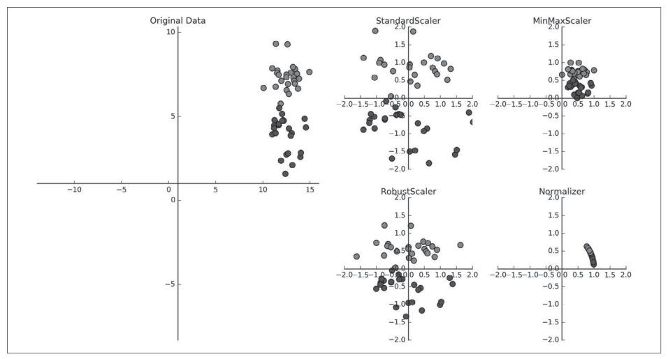
3.3.1 不同类型的预处理#
图 3-1 的第一张图是一个模拟的两特征二分类数据集：第一个特征（x 轴）位于 10 到 15 之间，第二个特征（y 轴）大约位于 1 到 9 之间——两个特征的量纲尺度差了一个数量级。接下来四张图展示四种变换，都生成了更"标准"的范围：
| 缩放器 | 做什么 | 特点与适用场景 |
|---|---|---|
| StandardScaler | 保证每个特征均值为 0、方差为 1，所有特征位于同一量级 | 最常用；不保证特征有任何特定的最大值和最小值 |
| RobustScaler | 与 StandardScaler 类似，但用的是中位数和四分位数，而不是平均值和方差 | 会忽略与其他点很不一样的数据点，即异常值（outlier）——比如测量误差；异常值会给其他缩放方法造成麻烦 |
| MinMaxScaler | 移动数据，使所有特征刚好位于 0 到 1 之间 | 二维数据集上，所有数据包含在 x 轴 0~1 与 y 轴 0~1 组成的矩形里 |
| Normalizer | 完全不同的思路：对每个数据点缩放，使特征向量的欧氏长度等于 1 | 把每个点投射到半径为 1 的圆上（高维是球面）；每个数据点的缩放比例都不相同（乘以其长度的倒数）；只有数据的方向（或角度）重要、长度无关紧要时使用 |
拓展：四种缩放器的公式对照
书中只给了直觉描述，这里把四把"尺子"的公式放在一起对照（记训练集第 \(j\) 个特征的取值为 \(x_{ij}\)）：
- StandardScaler：\(x' = \dfrac{x - \mu_j}{\sigma_j}\)，其中 \(\mu_j\) 是均值，\(\sigma_j\) 是标准差。
- RobustScaler：\(x' = \dfrac{x - Q_{2,j}}{Q_{3,j} - Q_{1,j}}\)，分子是中位数，分母是四分位距（IQR）。个别极端大值对均值/方差影响很大，但对中位数和四分位数几乎没影响，这就是它"鲁棒"的原因。
- MinMaxScaler：\(x' = \dfrac{x - \min_j}{\max_j - \min_j}\)，输出严格落在 \([0,1]\)。
- Normalizer：\(x' = \dfrac{x}{\lVert x \rVert_2}\)，逐样本除以自己的欧氏长度，和前三个"逐特征"的缩放完全不是一个维度的事。
拓展：脚注里的中位数与四分位数
原书脚注 1 给了定义：对一组数字，**中位数（median）**指这样的数值 \(x\)：有一半数值小于 \(x\)，另一半大于 \(x\)。较小四分位数指有四分之一的数值小于 \(x\) 的那个数；较大四分位数指有四分之一的数值大于 \(x\) 的那个数。RobustScaler 用的正是这两个四分位数之差（IQR）当"范围"。
3.3.2 应用数据变换#
用 scikit-learn 实际做一遍。数据用第 2 章的 cancer 数据集（569 个数据点，每个 30 个测量值）。场景：想先把数据用 MinMaxScaler 预处理，再跑核 SVM（SVC）。第一步，加载数据并划分训练/测试集（需要分开的数据来评估预处理后构建的监督模型），然后导入实现预处理的类并实例化：
# ===== 书 3.3.2 节：加载数据 + 实例化缩放器 =====
from sklearn.datasets import load_breast_cancer
from sklearn.model_selection import train_test_split
from sklearn.preprocessing import MinMaxScaler
cancer = load_breast_cancer()
X_train, X_test, y_train, y_test = train_test_split(cancer.data, cancer.target,
random_state=1)
print(X_train.shape) # (426, 30)
print(X_test.shape) # (143, 30)
scaler = MinMaxScaler()
训练集 426 个样本，测试集 143 个样本。接着使用 fit 方法拟合缩放器（scaler）：对 MinMaxScaler 来说，fit 计算训练集中每个特征的最大值和最小值（返回 MinMaxScaler(copy=True, feature_range=(0, 1))）。注意一个与第 2 章分类器和回归器（regressor）不同的地方：对缩放器调用 fit 时只提供 X_train，不用 y_train：
应用刚学到的变换用 transform 方法。在 scikit-learn 中，每当模型返回数据的一种新表示时，都用 transform：
# ===== 书 3.3.2 节：transform 训练数据并检查 =====
X_train_scaled = scaler.transform(X_train)
# 在缩放之前和之后分别打印数据集属性
print("transformed shape: {}".format(X_train_scaled.shape))
print("per-feature minimum before scaling:\n {}".format(X_train.min(axis=0)))
print("per-feature maximum before scaling:\n {}".format(X_train.max(axis=0)))
print("per-feature minimum after scaling:\n {}".format(
X_train_scaled.min(axis=0)))
print("per-feature maximum after scaling:\n {}".format(
X_train_scaled.max(axis=0)))
transformed shape: (426, 30)
per-feature minimum before scaling:
[ 6.98 9.71 43.79 143.50 0.05 ... 0.16 0.06]
per-feature maximum before scaling:
[ 28.11 39.28 188.5 2501.0 0.16 ... 4254.00 0.58 0.15]
per-feature minimum after scaling:
[ 0. 0. 0. ... 0.] ← 30 个特征全为 0
per-feature maximum after scaling:
[ 1. 1. 1. ... 1.] ← 30 个特征全为 1
变换后的数据形状与原始数据相同，特征只是发生了移动和缩放。现在所有特征都位于 0 到 1 之间，符合预期。
要把 SVM 用到缩放后的数据上，还需要对测试集进行变换——对 X_test 调用 transform：
# ===== 书 3.3.2 节：transform 测试数据 =====
X_test_scaled = scaler.transform(X_test)
# 在缩放之后打印测试数据的属性
print("per-feature minimum after scaling:\n{}".format(X_test_scaled.min(axis=0)))
print("per-feature maximum after scaling:\n{}".format(X_test_scaled.max(axis=0)))
per-feature minimum after scaling:
[ 0.034 0.023 0.031 ... -0.032 0.007 ... -0.002]
per-feature maximum after scaling:
[ 0.958 0.815 0.956 ... 1.337 0.391 ... 1.631]
对测试集缩放后的最大值和最小值不是 1 和 0，有些特征甚至跑到了 0~1 范围之外！解释：MinMaxScaler（以及其他所有缩放器）总是对训练集和测试集应用完全相同的变换。也就是说，transform 总是减去训练集的最小值、除以训练集的范围，而这两个值可能与测试集的最小值和范围并不相同。
3.3.3 对训练数据和测试数据进行相同的缩放#
为了让监督模型能在测试集上运行，对训练集和测试集应用完全相同的变换非常重要。如果反过来对测试集单独 fit 一次，会发生什么？下面用图 3-2 演示：
# ===== 书 3.3.3 节：正确缩放 vs 错误缩放 =====
from sklearn.datasets import make_blobs
# 构造数据
X, _ = make_blobs(n_samples=50, centers=5, random_state=4, cluster_std=2)
# 将其分为训练集和测试集
X_train, X_test = train_test_split(X, random_state=5, test_size=.1)
# 正确做法：fit 作用在训练集上，transform 作用在训练集和测试集上
scaler = MinMaxScaler()
scaler.fit(X_train)
X_train_scaled = scaler.transform(X_train)
X_test_scaled = scaler.transform(X_test)
# 错误做法：单独对测试集进行缩放，使得测试集的最小值为0、最大值为1
# 千万不要这么做！这里只是为了举例
test_scaler = MinMaxScaler()
test_scaler.fit(X_test)
X_test_scaled_badly = test_scaler.transform(X_test)
# （原书接着用三联散点图可视化上述三种数据，对应图 3-2）
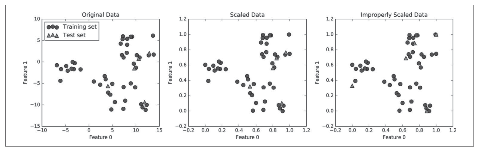
逐张图看：
- 左图（Original Data）：未缩放的二维数据集，训练集用圆形、测试集用三角形表示。
- 中图（Scaled Data）：同样的数据用 MinMaxScaler 缩放——
fit作用在训练集上，然后transform作用在训练集和测试集上。数据看起来与左图完全相同，只是坐标轴刻度变了，所有特征都在 0 到 1 之间。注意测试数据（三角形）的特征最大值和最小值并不是 1 和 0——这是正确的行为。 - 右图（Improperly Scaled Data）：对训练集和测试集分别缩放。这时训练集和测试集的特征最大值和最小值都是 1 和 0，但数据集的样子变了：测试集相对训练集的移动不一致，因为它们各自做了不同的缩放——我们随意改变了数据的排列。这显然不是想做的事。
再换一种思考方式：想象你的测试集只有一个点。对一个点而言，无法把它正确缩放以满足 MinMaxScaler 的最大值和最小值要求（一个点既是最大值又是最小值）。但测试集的大小不应该影响你的处理方式——所以单独对测试集 fit 这种做法从一开始就是错的。
侧栏：快捷方式与高效的替代方法 想先
fit一个模型再transform，是非常常见的任务，通常可以用比分别调用更高效的方法完成。所有具有transform方法的模型也都具有一个fit_transform方法：
# ===== 书 3.3.3 节 侧栏：fit_transform =====
from sklearn.preprocessing import StandardScaler
scaler = StandardScaler()
# 依次调用fit和transform（使用方法链）
X_scaled = scaler.fit(X).transform(X)
# 结果相同，但计算更加高效
X_scaled_d = scaler.fit_transform(X)
fit_transform不一定对所有模型都更加高效，但在尝试变换训练集时，使用这一方法仍然是很好的做法。
拓展：fit_transform 与"测试集只能 transform"
把这条纪律和第 2 章 autoNorm 返回 ranges/minVals 的做法连起来看：统计量（min/max、均值/方差、中位数）必须只从训练集学出来，然后原封不动地用到测试集和一切新数据上。对测试集单独 fit 不仅让缩放结果错位，在更一般的场景（如特征选择）里就是数据泄漏（data leakage）——测试集的信息提前参与了建模，评估结果会虚高。记住口令：fit 是"学习"，只能发生在训练集上；transform 是"执行"，训练集、测试集、未来的新数据都用同一个学好的变换。
3.3.4 预处理对监督学习的作用#
回到 cancer 数据集，观察 MinMaxScaler 对 SVC 的实际作用。先在原始数据上拟合 SVC 作对比，再用两种缩放器分别预处理后重训：
# ===== 书 3.3.4 节：未缩放 vs 缩放后的 SVC =====
from sklearn.svm import SVC
X_train, X_test, y_train, y_test = train_test_split(cancer.data, cancer.target,
random_state=0)
svm = SVC(C=100)
svm.fit(X_train, y_train)
print("Test set accuracy: {:.2f}".format(svm.score(X_test, y_test)))
# → 0.63（未缩放）
# 使用0-1缩放进行预处理
scaler = MinMaxScaler()
scaler.fit(X_train)
X_train_scaled = scaler.transform(X_train)
X_test_scaled = scaler.transform(X_test)
svm.fit(X_train_scaled, y_train)
print("Scaled test set accuracy: {:.2f}".format(
svm.score(X_test_scaled, y_test)))
# → 0.97（MinMaxScaler 缩放后）
# 换用零均值单位方差的缩放方法，接口相同，只需改类名
from sklearn.preprocessing import StandardScaler
scaler = StandardScaler()
scaler.fit(X_train)
X_train_scaled = scaler.transform(X_train)
X_test_scaled = scaler.transform(X_test)
svm.fit(X_train_scaled, y_train)
print("SVM test accuracy: {:.2f}".format(svm.score(X_test_scaled, y_test)))
# → 0.96（StandardScaler 缩放后）
数据缩放的作用非常显著：0.63 → 0.97 → 0.96。虽然缩放不涉及复杂数学，但良好的做法仍然是使用 scikit-learn 提供的缩放机制，而不是自己重新实现——即使在这些简单计算中也容易犯错。所有预处理类都有相同的接口（fit + transform），换一种预处理只需改一个类名。简单变换的工作原理你已经掌握了，下面进入更有趣的无监督变换。
3.4 降维、特征提取与流形学习#
利用无监督学习进行数据变换的目的很多，最常见的三个：可视化、压缩数据，以及寻找信息量更大的数据表示以用于进一步处理。
实现这些目的最简单也最常用的算法是主成分分析（PCA）。本章还学另外两种：非负矩阵分解（NMF），通常用于特征提取；t-SNE，通常用于二维散点图的可视化。
3.4.1 主成分分析#
主成分分析（principal component analysis, PCA）是一种旋转数据集的方法，旋转后的特征在统计上不相关。做完旋转之后，通常根据新特征对解释数据的重要性来选择它的一个子集。下面这个例子展示 PCA 对模拟二维数据集的作用：
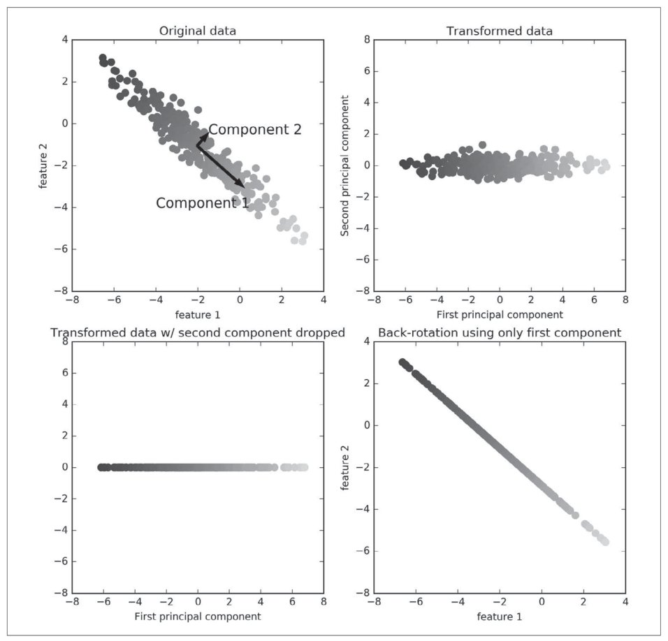
四张图按顺序看：
- 左上（原始数据）：算法首先找到方差最大的方向，标记为"成分 1"（Component 1）。这是数据中包含最多信息的方向（或向量），换句话说，沿着这个方向的特征之间最为相关。然后找到与第一个方向正交（成直角）且包含最多信息的方向。二维空间里只有一个成直角的方向，更高维的空间中会有（无穷）多的正交方向。虽然这两个成分都画成箭头，但头尾的位置并不重要——把第一个成分画成从中心指向左上也完全可以。这一过程找到的方向叫主成分（principal component），因为它们是数据方差的主要方向。一般来说，主成分的个数与原始特征相同。
- 右上（旋转后）：同样的数据被旋转，使得第一主成分与 x 轴平行、第二主成分与 y 轴平行。旋转之前先从数据中减去平均值，使变换后的数据以零为中心（中心化）。在 PCA 找到的旋转表示中，两个坐标轴是不相关的：对于这种数据表示，除了对角线，相关矩阵全部为零。
- 左下（降维）：仅保留一部分主成分来做降维。这里只保留第一主成分，数据从二维降为一维。注意：保留的不是原始特征之一，而是找到的最有趣方向（左上图中从左上到右下）——第一主成分。
- 右下（反向旋转）：反向旋转并把平均值重新加回数据。这些数据点位于原始特征空间中，但只保留了第一主成分中包含的信息。这种变换有时用于去除数据中的噪声，或者把主成分中保留的那部分信息可视化。
拓展：主成分的严格定义
原书用图 3-3 直观定义主成分，这里补上数学表述。设中心化后的数据为 \(x_1, \dots, x_n \in \mathbb{R}^p\)，第一主成分方向 \(w_1\) 是如下优化问题的解：
其中 \(C\) 是数据的协方差矩阵——"方差最大的方向"就是协方差矩阵最大特征值对应的特征向量；第二主成分是与 \(w_1\) 正交的方向上的同一问题最优解，以此类推。PCA 变换就是把原始坐标换成这组特征向量方向上的投影坐标。
1. 将 PCA 应用于 cancer 数据集并可视化#
PCA 最常见的应用之一是将高维数据集可视化。两个以上特征的数据很难直接画散点图；Iris 数据集可以画散点图矩阵（第 1 章图 1-3），但 cancer 数据集有 30 个特征，散点图矩阵也很吃力。
原书笔误：420 张散点图算错了
原书说 30 个特征"需要绘制 30 * 14 = 420 张散点图"。两两组合的数量应按 \(\binom{30}{2} = \dfrac{30 \times 29}{2} = 435\) 张计算（若把对角线上的自组合也算上则更多）。原书英文版即如此印刷，数字对不上组合公式，阅读时以"几十上百张图根本看不过来"这一定性结论为准。
更简单的可视化方法：对每个特征分别计算两个类别（良性肿瘤和恶性肿瘤）的直方图：
# ===== 书 3.4.1 节：cancer 每特征的类别直方图 =====
fig, axes = plt.subplots(15, 2, figsize=(10, 20))
malignant = cancer.data[cancer.target == 0]
benign = cancer.data[cancer.target == 1]
ax = axes.ravel()
for i in range(30):
_, bins = np.histogram(cancer.data[:, i], bins=50)
ax[i].hist(malignant[:, i], bins=bins, color=mglearn.cm3(0), alpha=.5)
ax[i].hist(benign[:, i], bins=bins, color=mglearn.cm3(2), alpha=.5)
ax[i].set_title(cancer.feature_names[i])
ax[i].set_yticks(())
ax[0].set_xlabel("Feature magnitude")
ax[0].set_ylabel("Frequency")
ax[0].legend(["malignant", "benign"], loc="best")
fig.tight_layout()
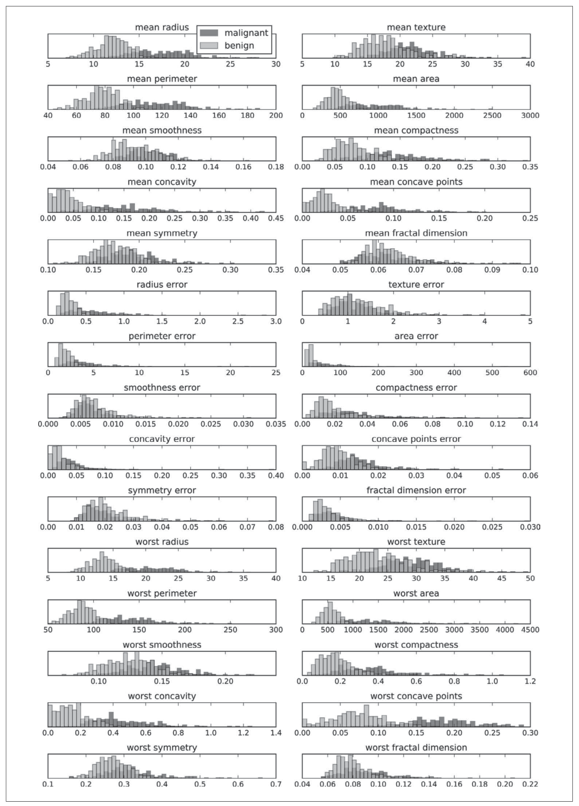
这里为每个特征创建一个直方图，计算具有某一特征的数据点在特定范围内（叫作 bin）的出现频率。每张图包含两个直方图：良性类别的所有点（蓝色）和恶性类别的所有点（红色）。由此可以了解每个特征在两个类别中的分布，并猜测哪些特征能更好地区分两类：例如 "smoothness error" 特征似乎没什么信息量（两个直方图大部分重叠），而 "worst concave points" 特征信息量相当大（两个直方图的交集很小）。
但这种图无法展示变量之间的相互作用以及这种相互作用与类别的关系。利用 PCA 可以获取主要的相互作用，得到稍完整的图像：找前两个主成分，在新二维空间中用散点图可视化。
应用 PCA 前先用 StandardScaler 缩放数据，使每个特征的方差均为 1（PCA 偏爱方差大的方向，量纲不一会让它偏向"数值大"的特征）。然后学习并应用 PCA 变换——与预处理变换一样简单：实例化 PCA 对象，调用 fit 找到主成分，然后调用 transform 旋转并降维。默认情况下 PCA 仅旋转（并移动）数据，保留所有主成分；要降维，需在创建 PCA 对象时指定想要保留的主成分个数：
# ===== 书 3.4.1 节：先缩放再 PCA 降维 =====
from sklearn.datasets import load_breast_cancer
from sklearn.decomposition import PCA
cancer = load_breast_cancer()
scaler = StandardScaler()
scaler.fit(cancer.data)
X_scaled = scaler.transform(cancer.data)
# 保留数据的前两个主成分
pca = PCA(n_components=2)
# 对乳腺癌数据拟合PCA模型
pca.fit(X_scaled)
# 将数据变换到前两个主成分的方向上
X_pca = pca.transform(X_scaled)
print("Original shape: {}".format(str(X_scaled.shape))) # (569, 30)
print("Reduced shape: {}".format(str(X_pca.shape))) # (569, 2)
# 对第一个和第二个主成分作图，按类别着色
plt.figure(figsize=(8, 8))
mglearn.discrete_scatter(X_pca[:, 0], X_pca[:, 1], cancer.target)
plt.legend(cancer.target_names, loc="best")
plt.gca().set_aspect("equal")
plt.xlabel("First principal component")
plt.ylabel("Second principal component")
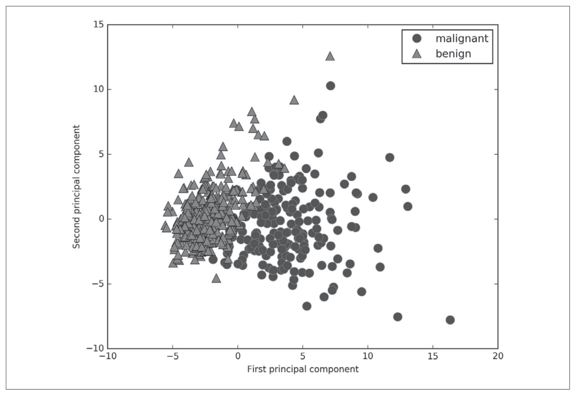
要点：PCA 是无监督方法，寻找旋转方向时没有用到任何类别信息，它只观察数据中的相关性；散点图是在画完之后才用类别信息着色的。在这个二维空间中两个类别被很好地分离——这让人相信，即使是线性分类器（在这个空间中学习一条直线）也可以在区分两个类别时表现得相当好。还可以看到恶性点比良性点更加分散，这一点与图 3-4 的直方图一致。
PCA 的一个缺点：通常不容易对图中的两个轴做出解释。主成分对应原始数据中的方向，是原始特征的组合，而这些组合往往非常复杂。拟合过程中，主成分保存在 PCA 对象的 components_ 属性中：形状为 (2, 30)——每一行对应一个主成分，按重要性排序（第一主成分排在首位）；列对应 PCA 的原始特征（"mean radius"、"mean texture" 等）：
# ===== 书 3.4.1 节：components_ 属性与热图 =====
print("PCA component shape: {}".format(pca.components_.shape))
print("PCA components:\n{}".format(pca.components_))
plt.matshow(pca.components_, cmap='viridis')
plt.yticks([0, 1], ["First component", "Second component"])
plt.colorbar()
plt.xticks(range(len(cancer.feature_names)),
cancer.feature_names, rotation=60, ha='left')
plt.xlabel("Feature")
plt.ylabel("Principal components")
PCA components:
[[ 0.219 0.104 0.228 0.221 0.143 ... 0.229 0.251 0.123 0.132]
[-0.234 -0.06 -0.215 -0.231 0.186 ... 0.098 -0.008 0.142 0.275]]
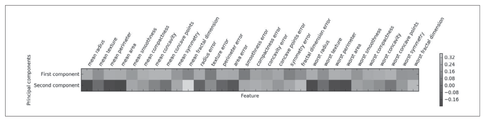
- 第一主成分中所有特征的符号相同（均为正——但符号本来就是任意的）。这意味着所有特征之间存在普遍的相关性：如果一个测量值较大，其他的测量值可能也较大。
- 第二主成分的符号有正有负，而且两个主成分都包含全部 30 个特征。这种所有特征的混合，使得解释图 3-6 的坐标轴十分困难。
拓展：到底保留几个成分？看解释方差
书中固定取 n_components=2 是为了画图。实际选成分个数时最常用的依据是解释方差比（explained variance ratio）：pca.explained_variance_ratio_ 返回每个主成分解释的方差占总方差的比例，按重要性递减。一条经验做法是累加前 \(k\) 个比例、取累计超过 80%~95% 的最小 \(k\)；也可以画"碎石图"找肘部。记住它，第 4 章讲模型选择时还会用到同类思路。
2. 特征提取的特征脸#
PCA 的另一个应用是特征提取（feature extraction）。其背后的思想：可以找到一种数据表示，比原始表示更适合分析。图像是绝佳例子：图像由像素组成，通常存储为红绿蓝（RGB）强度；图像中的对象通常由上千个像素组成，它们只有放在一起才有意义。
用 PCA 对图像做特征提取的经典应用，是处理 **Wild 数据集 Labeled Faces（标记人脸）**中的人脸图像。这一数据集包含从互联网下载的名人脸部图像——21 世纪初的政治家、歌手、演员和运动员。这里使用灰度版本并按比例缩小以加快处理：
# ===== 书 3.4.1 节：加载 LFW 人脸数据 =====
from sklearn.datasets import fetch_lfw_people
people = fetch_lfw_people(min_faces_per_person=20, resize=0.7)
image_shape = people.images[0].shape
fix, axes = plt.subplots(2, 5, figsize=(15, 8),
subplot_kw={'xticks': (), 'yticks': ()})
for target, image, ax in zip(people.target, people.images, axes.ravel()):
ax.imshow(image)
ax.set_title(people.target_names[target])
运行提示：fetch_lfw_people 首次运行会下载数据
fetch_lfw_people 第一次运行时需要从网络下载 LFW 数据集（约 200 MB）并本地缓存（默认在 ~/scikit_learn_data/lfw_home/）。本笔记的复现代码与书中一致；环境不能联网时需提前准备好缓存。
数据集概况：3023 张图像，每张 87 像素 × 65 像素，属于 62 个不同的人（people.images.shape 为 (3023, 87, 65)，len(people.target_names) 为 62）。数据集有些偏斜：George W. Bush（小布什）530 张、Colin Powell（鲍威尔）236 张，远多于其他人（书中用 np.bincount(people.target) 把每人张数全部打印出来核对）。降低偏斜的办法：每人最多取 50 张（否则特征提取会被 Bush 的可能性大大影响）：
# ===== 书 3.4.1 节：每人最多 50 张 =====
mask = np.zeros(people.target.shape, dtype=np.bool)
for target in np.unique(people.target):
mask[np.where(people.target == target)[0][:50]] = 1
X_people = people.data[mask]
y_people = people.target[mask]
# 将灰度值缩放到0到1之间，而不是在0到255之间
# 以得到更好的数据稳定性
X_people = X_people / 255.
版本差异：np.bool 已在 NumPy 1.24 被移除
书中 dtype=np.bool 是旧 NumPy 的写法。NumPy 1.24 起删除了 np.bool（弃用别名），直接运行会报 AttributeError。改用 Python 内置类型 dtype=bool 即可，语义不变。
人脸识别的一个常见任务：判断某个前所未见的人脸是否属于数据库中的某个已知人物（照片收集、社交媒体、安全应用都有需求）。做法之一是构建一个分类器，每个人一个类别。但人脸数据库通常人很多、每人的图像很少（每个类别的训练样例很少），大多数分类器很难训练；而且通常还想能轻松添加新人物、不用重新训练大型模型。
一种简单解法：单一最近邻分类器——寻找与待分类人脸最相似的人脸。这个分类器原则上可以处理每个类别只有一个训练样例的情况。看看 1-NN 的表现：
# ===== 书 3.4.1 节：原始像素上的 1-NN =====
from sklearn.neighbors import KNeighborsClassifier
# 将数据分为训练集和测试集
X_train, X_test, y_train, y_test = train_test_split(
X_people, y_people, stratify=y_people, random_state=0)
# 使用一个邻居构建KNeighborsClassifier
knn = KNeighborsClassifier(n_neighbors=1)
knn.fit(X_train, y_train)
print("Test set score of 1-nn: {:.2f}".format(knn.score(X_test, y_test)))
精度 26.6%。对 62 个类别的分类问题来说不算太差（随机猜测约 1/62 ≈ 1.5%），但也不算好——每识别四次才正确一个。
这里就轮到 PCA。想度量人脸相似度，在原始像素空间中算距离是相当糟糕的方法：像素表示比较的是两张图每个对应位置像素的灰度值，这与人们对人脸图像的解释方式有很大不同，很难获取面部特征。例如把人脸向右移动一个像素，像素距离会发生巨大变化，得到完全不同的表示。我们希望沿主成分方向的距离能提高精度。这里启用 PCA 的白化（whitening）选项：它将主成分缩放到相同尺度，变换结果与用 StandardScaler 处理后的效果相同。对照图 3-3 的数据：白化不仅旋转数据，还把数据缩放成圆形而不是椭圆（mglearn.plots.plot_pca_whitening()，见下图）：
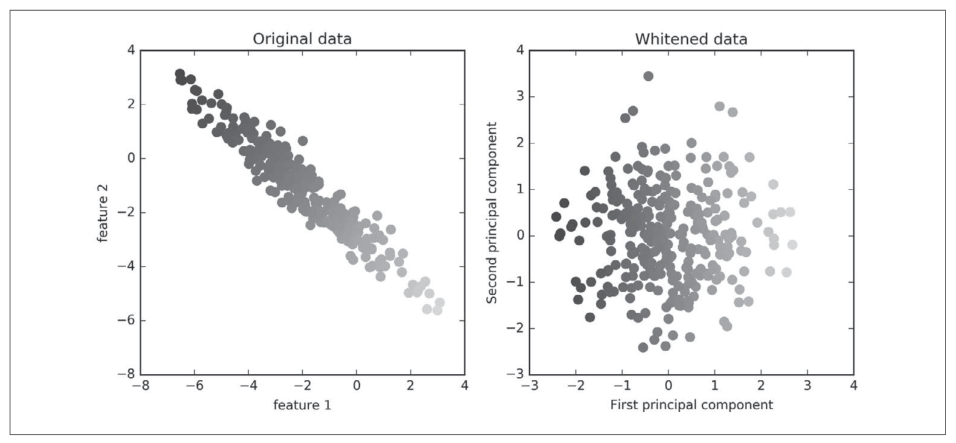
对训练数据拟合 PCA，提取前 100 个主成分，然后变换训练集和测试集，对新表示使用 1-NN 分类：
# ===== 书 3.4.1 节：白化 PCA 变换 + 1-NN =====
pca = PCA(n_components=100, whiten=True, random_state=0).fit(X_train)
X_train_pca = pca.transform(X_train)
X_test_pca = pca.transform(X_test)
print("X_train_pca.shape: {}".format(X_train_pca.shape)) # (1547, 100)
knn = KNeighborsClassifier(n_neighbors=1)
knn.fit(X_train_pca, y_train)
print("Test set accuracy: {:.2f}".format(knn.score(X_test_pca, y_test)))
精度从 26.6% 提升到 35.7%——证实了直觉：主成分提供了一种更好的数据表示。
拓展：为什么白化对 1-NN 这么有效
未白化时，第一主成分方向的方差远大于其他方向，两点间的欧氏距离几乎被前几个成分主导——相当于只用"光照和整体明暗"这种粗信息比较人脸。白化把 100 个成分拉到同一尺度，每个方向在距离中话语权均等，更多的"面部细节成分"得以参与比较，近邻检索自然更准。代价是白化会放大方差极小成分中的噪声，成分数不要取得太接近样本数。
图像数据还有一个福利：主成分本身可以直接可视化。成分对应输入空间里的方向，这里的输入空间是 87×65 的灰度图像，所以方向也是 87×65 的灰度图像（pca.components_.shape 为 (100, 5655)，87×65=5655）：
# ===== 书 3.4.1 节：绘制前 15 个特征脸 =====
fix, axes = plt.subplots(3, 5, figsize=(15, 12),
subplot_kw={'xticks': (), 'yticks': ()})
for i, (component, ax) in enumerate(zip(pca.components_, axes.ravel())):
ax.imshow(component.reshape(image_shape),
cmap='viridis')
ax.set_title("{}. component".format((i + 1)))
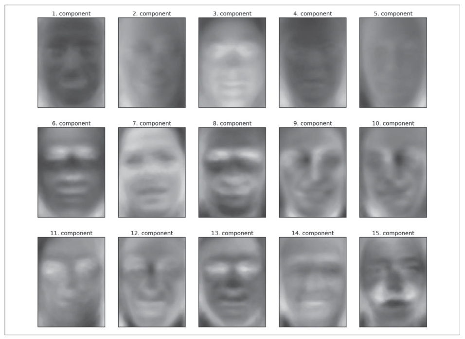
虽然无法理解这些成分的全部内容，但能猜到一些主成分捕捉的方面：第一个主成分似乎主要编码人脸与背景的对比，第二个编码人脸左半与右半的明暗差异，等等。这种表示比原始像素值的语义稍强，但仍与人们感知人脸的方式相去甚远：PCA 模型基于像素，人脸的相对位置（眼睛、下巴、鼻子的位置）和明暗程度对像素相似度影响很大，但人们评价人脸相似度时更可能用年龄、性别、面部表情和发型等属性——这些很难从像素强度推断出来。记住这个结论：算法对数据（特别是视觉数据）的解释通常与人类的解释方式大不相同。
拓展："特征脸"（eigenface）这个名字的来历
用 PCA 处理人脸得到的成分向量 reshape 后长得像一张张模糊的"平均脸"，数学上它们是数据协方差矩阵的特征向量（eigenvector），所以得名特征脸（eigenface）。这个方法由 Turk 和 Pentland 在 1991 年的经典论文 Eigenfaces for Recognition 中推广，是人脸识别历史上第一个主流的子空间方法——本章做的正是同一套流程：先 PCA 白化降维，再做近邻/线性分类。
对 PCA 还有一种有用的解释：寻找一些数字（PCA 旋转后的新特征值），使每个数据点可以表示为主成分的加权求和。原书图 3-10 画的是：一张人脸 \(\approx x_0 \times \text{成分}_0 + x_1 \times \text{成分}_1 + x_2 \times \text{成分}_2 + \cdots\)。这里的 \(x_0\)、\(x_1\) 等就是这个数据点的主成分系数——图像在旋转后空间中的表示。
还可以仅用一些成分对原始数据进行重建（图 3-3 的第四张图就是"去掉成分 2 后反旋转回来"）。对人脸做同样的事：将数据降维到只包含一些主成分，再用 inverse_transform 反向旋转回原始空间。分别用 10、50、100、500 个成分重建一些人脸：
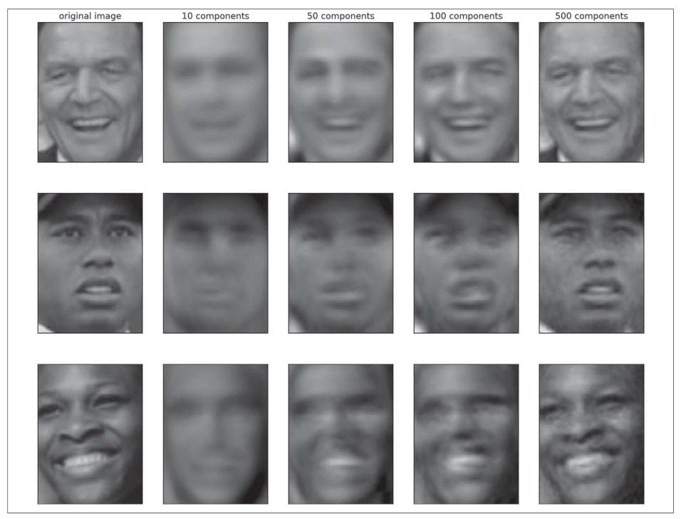
只用前 10 个主成分时，仅捕捉到图片的基本特点（人脸方向、明暗程度）；成分越多，保留的细节越多——对应图 3-10 的求和中包含越来越多的项。如果成分个数与像素个数相等，旋转后没有丢弃任何信息，可以完美重建图像。
再用前两个主成分把所有人脸画在散点图中（对应 cancer 数据集的图 3-5，原书图 3-12，代码与图 3-5 的散点写法相同）：结果是整个数据只是一大团，看不到类别之间的分界。这并不意外——即使有 10 个成分（图 3-11），PCA 也只捕捉到人脸非常粗略的特征。
3.4.2 非负矩阵分解#
非负矩阵分解（non-negative matrix factorization, NMF）是另一种无监督学习算法，目的同样是提取有用的特征，工作原理类似 PCA，也可以降维。与 PCA 相同，NMF 把每个数据点写成一些分量的加权求和。区别在约束：
| 对比项 | PCA | NMF |
|---|---|---|
| 分量约束 | 正交分量，能解释尽可能多的数据方差 | 分量与系数均非负（≥ 0） |
| 数据要求 | 无 | 每个特征都必须非负（非负分量的非负求和不可能为负） |
| 可解释性 | 负分量与负系数可能导致难以解释的抵消效应（cancellation effect） | 分量更容易解释，像"极值"或"部分" |
把数据分解成非负加权求和，对由多个独立源相加（叠加）创建的数据特别有用：多人说话的音轨、包含多种乐器的音乐等。这种情况下 NMF 能识别出组成合成数据的原始分量。总的来说，与 PCA 相比 NMF 得到的分量更容易解释——图 3-9 的特征脸同时包含正数和负数，而 PCA 的正负号实际上是任意的。
1. 将 NMF 应用于模拟数据#
与 PCA 不同，NMF 要求数据是正的，因此数据相对于原点 (0, 0) 的位置对 NMF 很重要——可以把提取出的非负分量看作是从 (0, 0) 指向数据的方向：
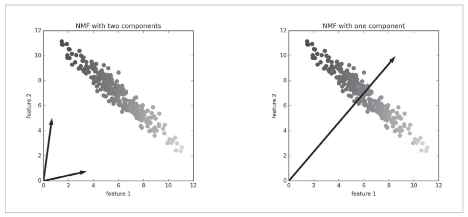
- 两个分量（左图）：所有数据点都可以写成这两个分量的正数组合。如果分量个数足够多、能完美重建数据（分量个数与特征个数相同），算法会选择指向数据极值的方向。
- 一个分量（右图）：NMF 会创建一个指向平均值的分量，因为指向这里可以对数据做出最好的解释。
重点来了：与 PCA 不同，减少分量个数不仅会删除一些方向，而且会创建一组完全不同的分量。另外，NMF 的分量没有按任何特定方法排序，不存在"第一非负分量"，所有分量的地位平等。
NMF 使用随机初始化，随机种子不同可能产生不同结果。相对简单的情况下（如两个分量的模拟数据）所有数据都能被完美解释，随机性影响很小（可能只影响分量的顺序或尺度）；更复杂的情况下影响可能很大。
版本差异：NMF 的默认初始化已改变
书中（scikit-learn 0.19 时代）NMF 采用纯随机初始化，所以作者才强调随机种子的影响。现代版本的 scikit-learn 将 NMF 的默认初始化改为基于 SVD 的确定性初始化（init="nndsvda" 一族），同样的 random_state 下结果基本可复现，但具体数值可能与书中插图略有出入。复跑时若看到分量顺序或形状与书不同，先想到这一点。
2. 将 NMF 应用于人脸图像#
把 NMF 用到之前的 LFW 人脸数据上。NMF 的主要参数是想要提取的分量个数，通常要小于输入特征的个数（否则把每个像素作为单独分量就可以解释数据了）。
先看分量个数如何影响 NMF 重建数据的好坏（mglearn.plots.plot_nmf_faces(X_train, X_test, image_shape)，原书图 3-14）：反向变换的数据质量与 PCA 类似但要稍差——这符合预期，因为 PCA 找到的正是重建的最佳方向。NMF 通常不用于重建或编码数据，而是用于在数据中寻找有趣的模式。
尝试提取 15 个分量，初步观察数据：
# ===== 书 3.4.2 节：15 个分量的 NMF =====
from sklearn.decomposition import NMF
nmf = NMF(n_components=15, random_state=0)
nmf.fit(X_train)
X_train_nmf = nmf.transform(X_train)
X_test_nmf = nmf.transform(X_test)
fix, axes = plt.subplots(3, 5, figsize=(15, 12),
subplot_kw={'xticks': (), 'yticks': ()})
for i, (component, ax) in enumerate(zip(nmf.components_, axes.ravel())):
ax.imshow(component.reshape(image_shape))
ax.set_title("{}. component".format(i))
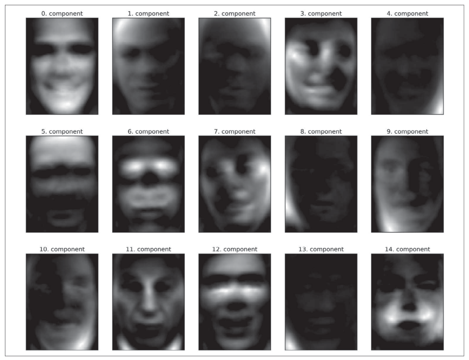
这些分量都是正的，因此比图 3-9 的 PCA 分量更像人脸原型：分量 3 显示的是稍微向右转的人脸，分量 7 显示的是稍微向左转的人脸。找出这两个分量系数特别大的图像看看——按 np.argsort(X_train_nmf[:, compn])[::-1] 把系数从大到小排序、取前 10 张图绘制（原书图 3-16 与图 3-17）：正如所料，分量 3 系数较大的人脸都是向右看的人脸，分量 7 系数较大的人脸都向左看。
如前所述，提取这样的模式最适合具有叠加结构的数据：音频、基因表达、文本。用一个模拟数据看这种用法。假设关注的信号是三个不同信号源合成的（原书图 3-18）：
# ===== 书 3.4.2 节：信号源、混合与还原 =====
S = mglearn.datasets.make_signals() # 三个原始信号源
plt.figure(figsize=(6, 1))
plt.plot(S, '-')
plt.xlabel("Time")
plt.ylabel("Signal")
# 将数据混合成100维的状态（100 台测量装置的观测）
A = np.random.RandomState(0).uniform(size=(100, 3))
X = np.dot(S, A.T)
print("Shape of measurements: {}".format(X.shape)) # (2000, 100)
# 用NMF来还原这三个信号
nmf = NMF(n_components=3, random_state=42)
S_ = nmf.fit_transform(X)
print("Recovered signal shape: {}".format(S_.shape)) # (2000, 3)
# 为了对比，也应用了PCA
pca = PCA(n_components=3)
H = pca.fit_transform(X)
# 并排绘制：观测 / 真实源 / NMF 还原 / PCA 还原（原书图 3-19）
models = [X, S, S_, H]
names = ['Observations (first three measurements)',
'True sources',
'NMF recovered signals',
'PCA recovered signals']
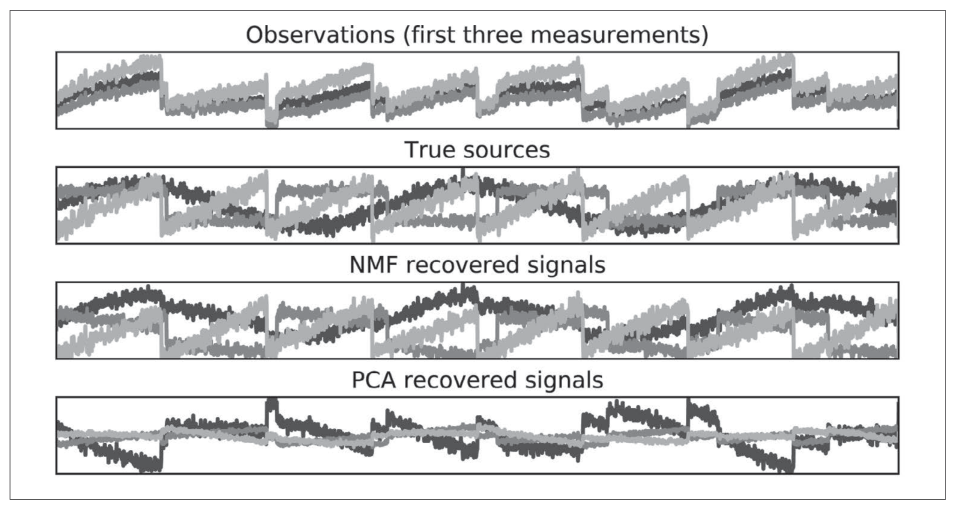
图中包含来自 X 的 100 次测量中的 3 次作参考。NMF 在发现原始信号源时得到了不错的结果，PCA 则失败了——它仅用第一个成分来解释数据中的大部分变化。注意 NMF 生成的分量没有顺序：本例中 NMF 分量的顺序恰好与原始信号相同（看三条曲线的颜色），但纯属偶然。
拓展：NMF 与"鸡尾酒会问题"
图 3-18 到图 3-19 的实验其实是盲源分离（blind source separation）的玩具版：多个独立信号混合后只留观测，要把源恢复出来——这就是著名的"鸡尾酒会问题"（在嘈杂酒会上分辨出每个人说话）。ICA 是解决这类问题的经典方法，对统计独立的源更在行；NMF 胜在"非负 + 可加"的约束天然符合音频能量、词频这类"只有加法没有减法"的数据。两者思路不同，但处理的问题高度重叠。
还有许多其他算法可以把数据点分解为固定分量的加权求和。如果对这种模式提取感兴趣，可以继续学习 scikit-learn 用户指南中的独立成分分析（ICA）、因子分析（FA）和稀疏编码（字典学习），它们都在"分解方法"页面（scikit-learn.org/stable/modules/decomposition.html）。
3.4.3 用 t-SNE 进行流形学习#
PCA 通常是变换数据的首选，但它的性质（先旋转然后减少方向）限制了它在可视化上的有效性——人脸数据的散点图（图 3-12）就是例子。有一类专用于可视化的算法叫流形学习算法（manifold learning algorithm），允许更复杂的映射，通常给出更好的可视化。其中特别有用的一个是 t-SNE。
流形学习算法的特点：
- 主要用于可视化，很少用来生成两个以上的新特征。
- 一些算法（包括 t-SNE）只计算训练数据的新表示，不允许变换新数据——不能用于测试集，只能变换用于训练的数据。
- 因此流形学习对探索性数据分析很有用，但如果最终目标是监督学习，则很少使用。
t-SNE 背后的思想：找到数据的一个二维表示，尽可能保持数据点之间的距离。它先给出每个数据点的随机二维表示，然后尝试让原始特征空间中距离较近的点更加靠近、距离较远的点更加远离。t-SNE 重点关注距离较近的点，而不是保持远处点之间的距离——换句话说，它试图保存"哪些点比较靠近"的信息。
在 scikit-learn 自带的手写数字 digits 数据集上应用 t-SNE。数据集中每个数据点是 0 到 9 手写数字的一张 8×8 灰度图像（原书脚注 2：不要与更大的 MNIST 数据集弄混；原书图 3-20 给出了每个类别的一个示例图像，加载与绘图代码为 load_digits() + 对 digits.images 逐张 imshow）。
先用 PCA 把数据降到二维可视化。这里不用散点，而是把每个点画成它对应的数字字符，颜色按类别指定：
# ===== 书 3.4.3 节：PCA 降维 digits =====
from sklearn.datasets import load_digits
digits = load_digits()
# 构建一个PCA模型
pca = PCA(n_components=2)
pca.fit(digits.data)
# 将digits数据变换到前两个主成分的方向上
digits_pca = pca.transform(digits.data)
colors = ["#476A2A", "#7851B8", "#BD3430", "#4A2D4E", "#875525",
"#A83683", "#4E655E", "#853541", "#3A3120", "#535D8E"]
plt.figure(figsize=(10, 10))
plt.xlim(digits_pca[:, 0].min(), digits_pca[:, 0].max())
plt.ylim(digits_pca[:, 1].min(), digits_pca[:, 1].max())
for i in range(len(digits.data)):
# 将数据实际绘制成文本，而不是散点
plt.text(digits_pca[i, 0], digits_pca[i, 1], str(digits.target[i]),
color = colors[digits.target[i]],
fontdict={'weight': 'bold', 'size': 9})
plt.xlabel("First principal component")
plt.ylabel("Second principal component")
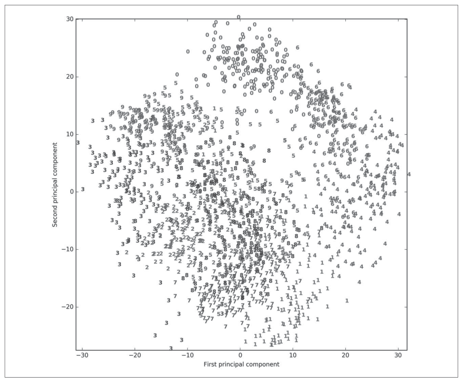
利用前两个主成分可以把数字 0、6 和 4 相对较好地分开（尽管仍有重叠），大部分其他数字大量重叠在一起。
把 t-SNE 应用于同一数据集比较。t-SNE 不支持变换新数据，所以 TSNE 类没有 transform 方法——要调用 fit_transform，它构建模型并立刻返回变换后的数据：
# ===== 书 3.4.3 节：t-SNE 变换与绘图 =====
from sklearn.manifold import TSNE
tsne = TSNE(random_state=42)
# 使用fit_transform而不是fit，因为TSNE没有transform方法
digits_tsne = tsne.fit_transform(digits.data)
plt.figure(figsize=(10, 10))
plt.xlim(digits_tsne[:, 0].min(), digits_tsne[:, 0].max() + 1)
plt.ylim(digits_tsne[:, 1].min(), digits_tsne[:, 1].max() + 1)
for i in range(len(digits.data)):
# 将数据实际绘制成文本，而不是散点
plt.text(digits_tsne[i, 0], digits_tsne[i, 1], str(digits.target[i]),
color = colors[digits.target[i]],
fontdict={'weight': 'bold', 'size': 9})
plt.xlabel("t-SNE feature 0")
plt.xlabel("t-SNE feature 1")
原书笔误：第二个 xlabel 应为 ylabel
上面这段书印代码里 plt.xlabel("t-SNE feature 0") 之后又写了一次 plt.xlabel("t-SNE feature 1")——第二行应该是 plt.ylabel(...)。所以书印的图 3-22 里 y 轴没有标签。想复现出带 y 轴标签的图，把第二行改成 plt.ylabel("t-SNE feature 1")。
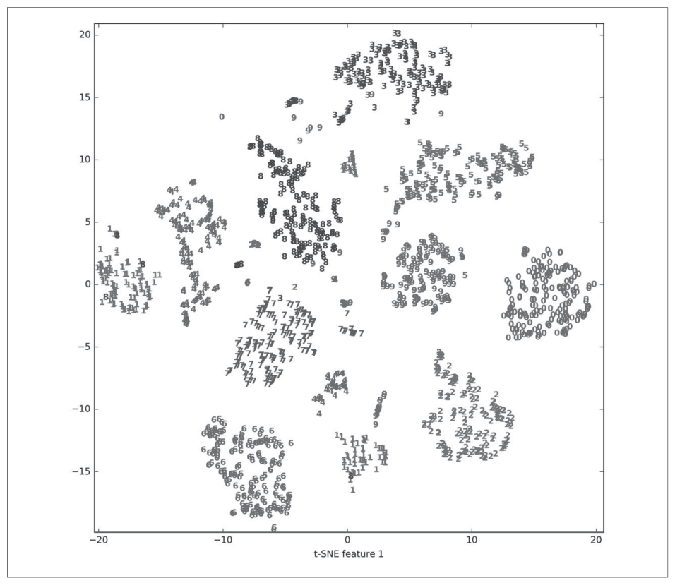
t-SNE 的结果非常棒：所有类别都被明确分开。数字 1 和 9 被分成几块，但大多数类别都形成一个密集的组。要记住，这种方法并不知道类别标签：它完全是无监督的，却能找到一种二维表示，仅凭原始空间中数据点之间的靠近程度就把各个类别明确分开。
t-SNE 有一些调节参数，虽然默认参数通常效果就很好。可以尝试修改 perplexity 和 early_exaggeration，但作用一般很小。
拓展：perplexity 的直觉
perplexity（困惑度）可以粗略理解为"每个点关心的近邻数量"，scikit-learn 建议取 5 到 50 之间。取得小，t-SNE 只保住非常局部的结构，图会碎成一堆小团；取得大，它开始照顾更大范围的邻域，团与团的关系更稳定但局部细节被抹平。early_exaggeration 控制优化初期把簇间距离"夸大"的倍率，影响簇与簇分得开不开。实践中调 perplexity 的收益远大于调 early_exaggeration——这与书中"作用一般很小"的结论一致（默认值对多数数据已经够好）。
版本差异：TSNE 默认参数已变
书中 TSNE(random_state=42) 的写法在 scikit-learn 1.2 之后行为有变：新版默认 init="pca"、learning_rate="auto"（旧版为 init="random"、learning_rate=200.0）。新旧版的输出布局会有明显差别（都是合理的可视化，只是坐标不同）；想完全复现书中的图，可显式写 TSNE(init="random", learning_rate=200.0, random_state=42)。
3.5 聚类#
聚类（clustering）是将数据集划分成组的任务，这些组叫作簇（cluster）。目标是划分数据，使得一个簇内的数据点非常相似、不同簇内的数据点非常不同。与分类算法类似，聚类算法为每个数据点分配（或预测）一个数字，表示这个点属于哪个簇——但这个数字本身没有先验意义。
3.5.1 k均值聚类#
k 均值聚类是最简单也最常用的聚类算法之一。它试图找到代表数据特定区域的簇中心（cluster center）。算法交替执行两个步骤：
- 将每个数据点分配给最近的簇中心；
- 将每个簇中心设置为所分配的所有数据点的平均值。
如果簇的分配不再发生变化，算法结束。用模拟数据看这个过程：
# ===== 书 3.5.1 节：k 均值算法步骤与簇边界图解 =====
mglearn.plots.plot_kmeans_algorithm() # 图 3-23：算法的三个步骤
mglearn.plots.plot_kmeans_boundaries() # 图 3-24：簇中心和簇边界
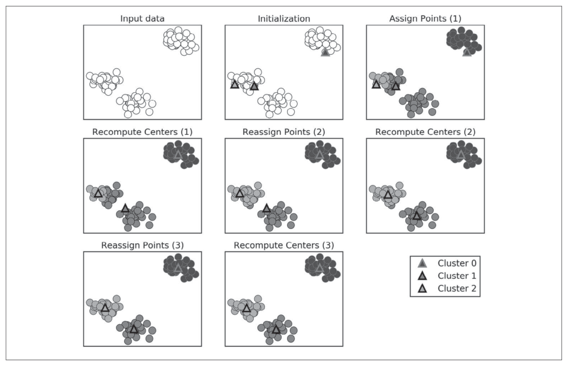
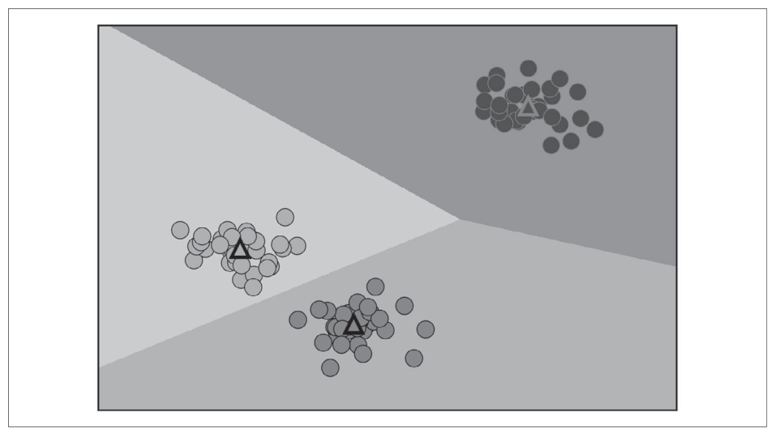
图 3-23 中簇中心用三角形表示，数据点用圆形表示，颜色表示簇成员。指定寻找 3 个簇，算法先把三个随机数据点声明为簇中心（Initialization）。然后迭代：每个数据点分配给最近的簇中心（Assign Points (1)）→ 簇中心改为所分配点的平均值（Recompute Centers (1)）→ 重复。第三次迭代之后分配不再变化，算法结束。给定新数据点，k 均值会把它分配给最近的簇中心；图 3-24 显示学到的簇中心的边界——边界画在簇中心的正中间。
用 scikit-learn 应用 k 均值：
# ===== 书 3.5.1 节：KMeans 基本用法 =====
from sklearn.datasets import make_blobs
from sklearn.cluster import KMeans
# 生成模拟的二维数据
X, y = make_blobs(random_state=1)
# 构建聚类模型
kmeans = KMeans(n_clusters=3)
kmeans.fit(X)
脚注：n_clusters 的默认值是 8
原书脚注 3：如果不指定 n_clusters，它的默认值是 8，使用这个值并没有什么特别的原因。这个默认值至今未变——忘设参数就会默默得到 8 个簇，别踩这个坑。
算法运行期间，为 X 中的每个训练数据点分配一个簇标签，保存在 kmeans.labels_ 属性中：
Cluster memberships:
[1 2 2 2 0 0 0 2 1 1 2 2 0 1 0 0 0 1 2 2 0 2 0 1 2 0 0 1 1 0 1 1 0 1 2 0 2
2 2 0 0 2 1 2 2 0 1 1 1 1 2 0 0 0 1 0 2 2 1 1 2 0 0 2 2 0 1 0 1 2 2 2 0 1
1 2 0 0 1 2 1 2 2 0 1 1 1 1 2 1 0 1 1 2 2 0 0 1 0 1]
找 3 个簇，所以簇的编号是 0 到 2。也可以用 predict 方法为新数据点分配簇标签：预测时把最近的簇中心分配给每个新点，但现有模型不会改变。对训练集运行 predict 会返回与 labels_ 完全相同的结果。
聚类算法与分类算法有些相似——每个元素都有一个标签——但不存在真实的标签，标签本身没有先验意义。回到人脸聚类的例子：聚类结果可能是第 3 个簇只包含你朋友 Bela 的面孔，但只有查看图片之后才能知道这一点，而且数字 3 是任意的。算法给你的唯一信息就是：所有标签为 3 的人脸都是相似的。再跑一次算法可能得到完全不同的簇编号（初始化是随机的）。
画出这个数据的聚类结果。簇中心保存在 cluster_centers_ 属性中，用三角形表示（原书图 3-25）：
# ===== 书 3.5.1 节：画出簇分配与簇中心 =====
mglearn.discrete_scatter(X[:, 0], X[:, 1], kmeans.labels_, markers='o')
mglearn.discrete_scatter(
kmeans.cluster_centers_[:, 0], kmeans.cluster_centers_[:, 1], [0, 1, 2],
markers='^', markeredgewidth=2)
也可以使用更多或更少的簇中心：KMeans(n_clusters=2) 会把下方两组合并，KMeans(n_clusters=5) 会把中间的组劈开（原书图 3-26，绘图写法同上，把 ax 参数分别传给左右两个子图即可）。
1. k均值的失败案例#
即使知道数据集中簇的"正确"个数，k 均值也可能找不到它们。原因有两条，都源于它的模型假设：
- 每个簇仅由其中心定义，这意味着每个簇都是凸形（convex）——k 均值只能找到相对简单的形状。
- k 均值还假设所有簇在某种程度上具有相同的"直径"，它总是把簇之间的边界刚好画在簇中心的中间位置。
第一条：簇的密度不同时（make_blobs(n_samples=200, cluster_std=[1.0, 2.5, 0.5], random_state=170)，原书图 3-27），你可能以为左下方的密集区域是第一个簇、右上方的密集区域是第二个、中间密度较小的是第三个。但事实上，簇 0 和簇 1 都包含一些远离簇中其他点的点——等直径假设让边界画在了"错误"的地方。
第二条：k 均值假设所有方向对每个簇都同等重要。下面的二维数据明确分成三部分，但每部分沿对角线方向拉长。k 均值只考虑最近簇中心的距离，无法处理这种数据：
# ===== 书 3.5.1 节：拉长（非球形）的簇 =====
# 生成一些随机分组数据
X, y = make_blobs(random_state=170, n_samples=600)
rng = np.random.RandomState(74)
# 变换数据使其拉长
transformation = rng.normal(size=(2, 2))
X = np.dot(X, transformation)
# 将数据聚类成3个簇
kmeans = KMeans(n_clusters=3)
kmeans.fit(X)
y_pred = kmeans.predict(X)
# 画出簇分配和簇中心
plt.scatter(X[:, 0], X[:, 1], c=y_pred, cmap=mglearn.cm3)
plt.scatter(kmeans.cluster_centers_[:, 0], kmeans.cluster_centers_[:, 1],
marker='^', c=[0, 1, 2], s=100, linewidth=2, cmap=mglearn.cm3)
plt.xlabel("Feature 0")
plt.ylabel("Feature 1")
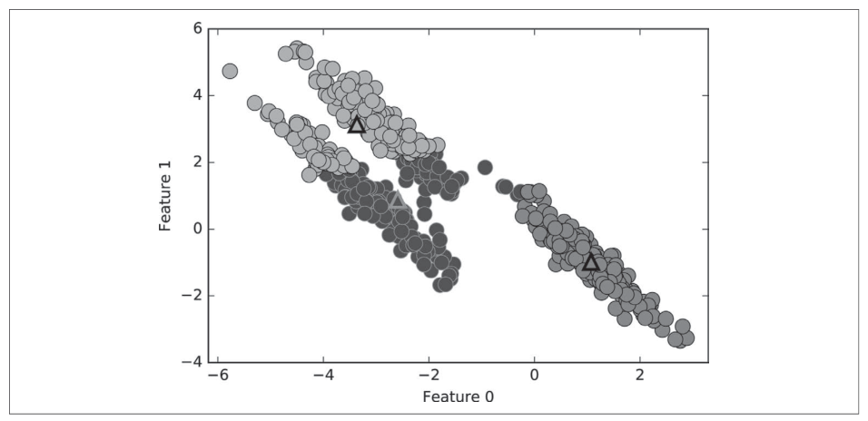
簇的形状更复杂时——比如第 2 章的 two_moons 数据——k 均值同样表现很差：
# ===== 书 3.5.1 节：two_moons 上的 k 均值 =====
# 生成模拟的two_moons数据（这次的噪声较小）
from sklearn.datasets import make_moons
X, y = make_moons(n_samples=200, noise=0.05, random_state=0)
# 将数据聚类成2个簇
kmeans = KMeans(n_clusters=2)
kmeans.fit(X)
y_pred = kmeans.predict(X)
# 画出簇分配和簇中心
plt.scatter(X[:, 0], X[:, 1], c=y_pred, cmap=mglearn.cm2, s=60)
plt.scatter(kmeans.cluster_centers_[:, 0], kmeans.cluster_centers_[:, 1],
marker='^', c=[mglearn.cm2(0), mglearn.cm2(1)], s=100, linewidth=2)
plt.xlabel("Feature 0")
plt.ylabel("Feature 1")
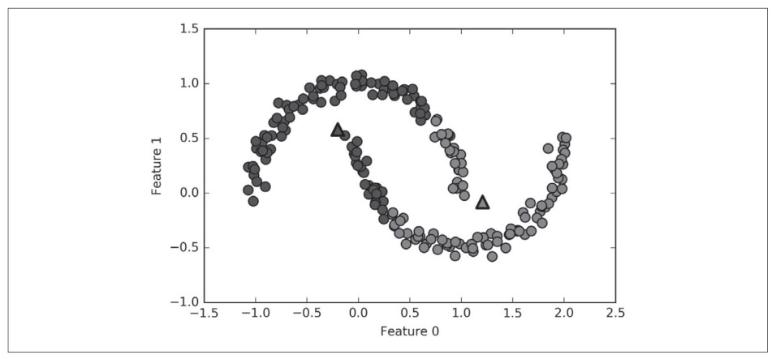
我们希望聚类算法发现两个半月形，但利用 k 均值不可能做到。
2. 矢量量化，或者将k均值看作分解#
虽然 k 均值是聚类算法，但它与分解方法（PCA、NMF）有一些有趣的相似之处。PCA 试图找到数据中方差最大的方向，NMF 试图找到累加的分量（对应数据的"极值"或"部分"）；两者都试图将数据点表示为一些分量之和。与之相反，k 均值尝试利用簇中心来表示每个数据点——你可以把它看作每个点只用一个分量表示，该分量由簇中心给出。这种"每个点用单一分量表示"的观点叫矢量量化（vector quantization）。
并排比较 PCA、NMF 和 k 均值：分别显示提取的分量（原书图 3-30），以及利用 100 个分量对测试集人脸的重建（图 3-31）。对 k 均值来说，重建就是训练集中最近的簇中心：
# ===== 书 3.5.1 节：三种方法的 100 分量重建 =====
X_train, X_test, y_train, y_test = train_test_split(
X_people, y_people, stratify=y_people, random_state=0)
nmf = NMF(n_components=100, random_state=0)
nmf.fit(X_train)
pca = PCA(n_components=100, random_state=0)
pca.fit(X_train)
kmeans = KMeans(n_clusters=100, random_state=0)
kmeans.fit(X_train)
X_reconstructed_pca = pca.inverse_transform(pca.transform(X_test))
X_reconstructed_kmeans = kmeans.cluster_centers_[kmeans.predict(X_test)]
X_reconstructed_nmf = np.dot(nmf.transform(X_test), nmf.components_)
# （原书接着用两组网格图绘制"提取的分量"与"重建结果"，对应图 3-30 与图 3-31）
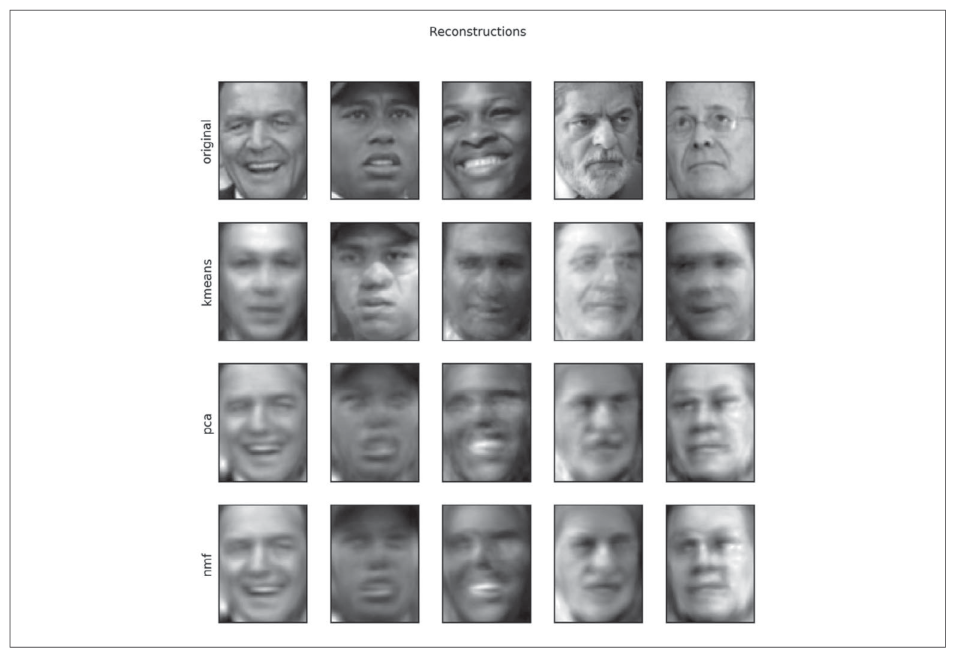
k 均值做矢量量化的一个有趣之处：可以用比输入维度更多的簇来对数据编码。回到 two_moons 数据：PCA 或 NMF 对它无能为力——只有两个维度，降到一维会完全破坏数据结构。但用更多的簇中心，k 均值能找到更具表现力的表示：
# ===== 书 3.5.1 节：10 个簇的矢量量化 + 距离特征 =====
X, y = make_moons(n_samples=200, noise=0.05, random_state=0)
kmeans = KMeans(n_clusters=10, random_state=0)
kmeans.fit(X)
y_pred = kmeans.predict(X)
plt.scatter(X[:, 0], X[:, 1], c=y_pred, s=60, cmap='Paired')
plt.scatter(kmeans.cluster_centers_[:, 0], kmeans.cluster_centers_[:, 1], s=60,
marker='^', c=range(kmeans.n_clusters), linewidth=2, cmap='Paired')
plt.xlabel("Feature 0")
plt.ylabel("Feature 1")
# 将到每个簇中心的距离作为特征，用 kmeans 的 transform 方法
distance_features = kmeans.transform(X)
print("Distance feature shape: {}".format(distance_features.shape))
print("Distance features:\n{}".format(distance_features))
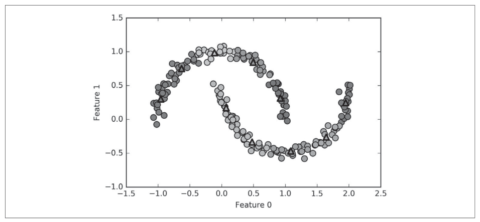
Distance feature shape: (200, 10)
Distance features:
[[ 0.922 1.466 1.14 ..., 1.166 1.039 0.233]
[ 1.142 2.517 0.12 ..., 0.707 2.204 0.983]
...,
[ 1.39 0.798 1.981 ..., 1.978 0.239 1.058]
[ 1.149 2.454 0.045 ..., 0.572 2.113 0.882]]
用了 10 个簇中心，每个点被分配 0 到 9 之间的一个数字。可以把它看作10 个分量表示的数据（10 个新特征）：只有该点对应簇中心的那个特征不为 0，其余都是 0（one-hot 式表示）。利用这个 10 维表示，现在可以用线性模型来划分两个半月形——原始的两个特征做不到。将到每个簇中心的距离作为特征，还能得到表现力更强的表示（200 行 10 列，每行是该点到 10 个簇中心的距离）。
拓展：这就是"核技巧的穷人版"
用足够多的簇中心（或到中心的距离）把两个原始特征膨胀成十个新特征，让原本线性不可分的数据变得线性可分——这与核方法"把数据映射到更高维空间"的思想同源，只是映射不是先验固定的核函数，而是从数据中学出来的（簇中心位置）。深度学习之前的很多"特征学习"套路就是这个思路的变体。另外，k 均值的这个目标函数——所有点到自己簇中心距离的平方和——有个专有名字：惯性（inertia），kmeans.inertia_ 属性可以直接读出；下面"运行 10 次取最佳"中的"最佳"就是它最小。
k 均值非常流行：相对容易理解和实现，运行速度相对较快，可以轻松扩展到大型数据集（scikit-learn 还提供了更具可扩展性的变体 MiniBatchKMeans，可处理非常大的数据集）。缺点也有两条：
- 依赖随机初始化：算法输出依赖随机种子。默认情况下，scikit-learn 用 10 种不同的随机初始化将算法运行 10 次，并返回最佳结果（脚注 4："最佳"的意思是簇的方差之和最小）。
- 对簇形状的假设约束性较强（凸形、等直径），而且要求指定簇的个数——现实世界的应用中可能并不知道这个数字。
版本差异：KMeans 的 n_init 默认值
"默认运行 10 次取最佳"对应旧版 n_init=10。scikit-learn 1.4 起 n_init 的默认值改为 'auto'：在默认的 init="k-means++" 下只跑 1 次初始化（k-means++ 本身更聪明——第一个中心随机选、后续中心以"离已有中心越远概率越大"选取，不再需要多次随机重启兜底）。这会带来两个后果：一是新版结果与旧版可能不同，二是要复现书中"跑 10 次"的行为需显式写 KMeans(n_init=10)。
3.5.2 凝聚聚类#
凝聚聚类（agglomerative clustering）指许多基于相同原则构建的聚类算法：算法首先声明每个点是自己的簇，然后合并两个最相似的簇，直到满足某种停止准则。scikit-learn 中实现的停止准则是簇的个数——相似的簇被合并，直到仅剩下指定个数的簇。
"最相似的簇"如何度量由链接（linkage）准则规定，这种度量总是定义在两个现有簇之间。scikit-learn 实现了三种选项：
| linkage | 合并规则 | 效果 |
|---|---|---|
ward（默认） |
挑选两个簇来合并，使得所有簇中的方差增加最小 | 通常得到大小差不多相等的簇 |
average |
将簇中所有点之间平均距离最小的两个簇合并 | — |
complete（也称最大链接） |
将簇中点之间最大距离最小的两个簇合并 | — |
ward 适用于大多数数据集（本章例子都用它）；如果簇中的成员个数非常不同（比如一个簇比其他所有簇大得多），average 或 complete 可能效果更好。
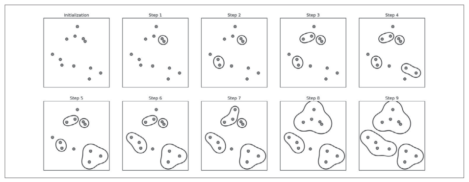
最开始每个点自成一簇。每一步合并相距最近的两个簇：前四个步骤选出两个单点簇合并成两点簇；步骤 5（Step 5）中一个两点簇被扩展到三个点；步骤 9（Step 9）时只剩下 3 个簇——指定要找 3 个簇，算法结束。
由于算法的工作原理，凝聚算法不能对新数据点做出预测，因此 AgglomerativeClustering 没有 predict 方法。要构造模型并得到训练集上的簇成员关系，改用 fit_predict 方法（脚注 5：也可以使用 labels_ 属性，与 k 均值一样）：
# ===== 书 3.5.2 节：AgglomerativeClustering 用法 =====
from sklearn.cluster import AgglomerativeClustering
X, y = make_blobs(random_state=1)
agg = AgglomerativeClustering(n_clusters=3)
assignment = agg.fit_predict(X)
mglearn.discrete_scatter(X[:, 0], X[:, 1], assignment)
plt.xlabel("Feature 0")
plt.ylabel("Feature 1") # 原书图 3-34：3 个簇的分配结果，完美聚类
正如所料，算法完美地完成了聚类。scikit-learn 实现需要你指定希望找到的簇个数，但凝聚聚类为选择正确的个数提供了一些帮助——就是下面的层次聚类与树状图。
1. 层次聚类与树状图#
凝聚聚类生成了所谓的层次聚类（hierarchical clustering）：聚类过程迭代进行，每个点从一个单点簇变为属于最终的某个簇，每个中间步骤都提供了数据的一种聚类（簇的个数不同）。有时同时查看所有可能的聚类是有帮助的：mglearn.plots.plot_agglomerative() 用连线把图 3-33 中所有可能的聚类叠加显示出来（原书图 3-35）。这种可视化对层次聚类提供了非常详细的视图，但依赖数据的二维性质，不能用于两个以上特征的数据集。另一个可视化工具是树状图（dendrogram），它可以处理多维数据集。
不幸的是，scikit-learn 没有绘制树状图的功能，但可以用 SciPy 轻松生成。SciPy 的聚类接口与 scikit-learn 稍有不同：它提供一个函数，接受数据数组 X 并计算出一个链接数组（linkage array），对层次聚类的相似度进行编码；再把链接数组交给 dendrogram 函数绘制：
# ===== 书 3.5.2 节：SciPy 树状图 =====
# 从SciPy中导入dendrogram函数和ward聚类函数
from scipy.cluster.hierarchy import dendrogram, ward
X, y = make_blobs(random_state=0, n_samples=12)
# 将ward聚类应用于数据数组X
# SciPy的ward函数返回一个数组，指定执行凝聚聚类时跨越的距离
linkage_array = ward(X)
# 现在为包含簇之间距离的linkage_array绘制树状图
dendrogram(linkage_array)
# 在树中用虚线标记划分成两个簇（y=7.25）或三个簇（y=4）的位置，
# 并在虚线右端标注文字（原书用 ax.plot + ax.text 实现，此处从略）
ax = plt.gca()
bounds = ax.get_xbound()
plt.xlabel("Sample index")
plt.ylabel("Cluster distance")
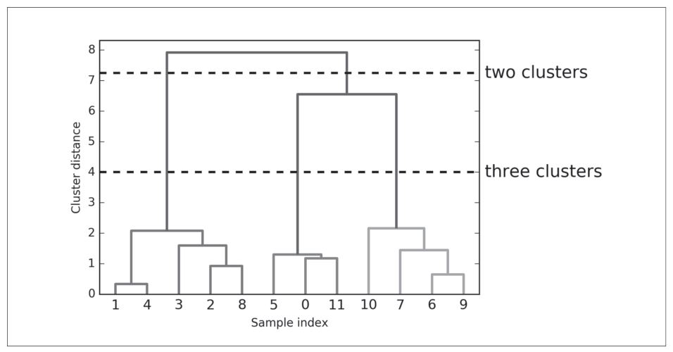
读树状图的方法：
- 底部显示数据点（编号 0 到 11），以这些点（单点簇）作为叶节点；每合并两个簇就添加一个新的父节点。
- 从下往上看：数据点 1 和 4 首先被合并（正是图 3-33 的第一步），接下来 6 和 9 被合并，以此类推。顶层有两个分支：一个由点 11、0、5、10、7、6、9 组成，另一个由点 1、4、3、2、8 组成——对应图中左侧两个最大的簇。
- y 轴不仅说明两个簇何时合并，每个分支的长度还表示被合并的簇之间的距离。图中最长的分支是"three clusters"虚线处的三条线——从三个簇到两个簇的过程中合并了一些距离非常远的点；图像上方把剩下两个簇合并为一个簇也需要跨越相对较大的距离。
不幸的是，凝聚聚类仍然无法分离 two_moons 这样复杂的形状。下一个算法 DBSCAN 可以解决这个问题。
3.5.3 DBSCAN#
另一个非常有用的聚类算法是 DBSCAN——"density-based spatial clustering of applications with noise"（具有噪声的基于密度的空间聚类应用）的缩写。相比前两种算法，它的主要优点：
- 不需要用户先验地设置簇的个数；
- 可以划分具有复杂形状的簇；
- 可以找出不属于任何簇的点。
DBSCAN 比凝聚聚类和 k 均值稍慢，但仍可以扩展到相对较大的数据集。
原理：识别特征空间"拥挤"区域中的点——许多数据点靠近在一起的区域，叫密集（dense）区域。核心思想：簇形成数据的密集区域，并由相对较空的区域分隔开。
**核心样本（core sample，或核心点）**的定义：DBSCAN 有两个参数 min_samples 和 eps，如果在距一个给定数据点 eps 的距离内至少有 min_samples 个数据点，这个点就是核心样本。DBSCAN 将彼此距离小于 eps 的核心样本放到同一个簇中。
算法流程：任意选一个点，找到距它小于等于 eps 的所有点。若 eps 内的数据点个数小于 min_samples，这个点被标记为噪声（noise）——不属于任何簇；若大于 min_samples，这个点被标记为核心样本，分配一个新的簇标签；然后访问该点的所有邻居（eps 以内）：没被分配簇的就分配刚创建的簇标签，如果它们也是核心样本，就继续访问它们的邻居……簇逐渐增大，直到 eps 距离内没有更多的核心样本。然后选另一个尚未访问的点，重复同样的过程。
最终数据点有三种类型：核心点、边界点（boundary point）（与核心点的距离在 eps 内、但自己不是核心）和噪声。多次运行 DBSCAN，核心点的聚类始终相同、噪声也始终相同；但边界点可能与不止一个簇的核心样本相邻，它所属的簇依赖数据点的访问顺序。一般来说边界点很少，这种对访问顺序的轻度依赖并不重要。
把 DBSCAN 用在演示凝聚聚类的模拟数据集上。与凝聚聚类类似，DBSCAN 也不允许对新测试数据预测，用 fit_predict 执行聚类并返回簇标签：
# ===== 书 3.5.3 节：默认参数的 DBSCAN =====
from sklearn.cluster import DBSCAN
X, y = make_blobs(random_state=0, n_samples=12)
dbscan = DBSCAN()
clusters = dbscan.fit_predict(X)
print("Cluster memberships:\n{}".format(clusters))
所有数据点都被分配了标签 -1，代表噪声。这是 eps 和 min_samples 默认参数的结果——对小型玩具数据集并没有调节这些参数。看看 min_samples 和 eps 取不同值时的簇分类（mglearn.plots.plot_dbscan()，可视化见图 3-37）：
min_samples: 2 eps: 1.000000 cluster: [-1 0 0 -1 0 -1 1 1 0 1 -1 -1]
min_samples: 2 eps: 1.500000 cluster: [0 1 1 1 1 0 2 2 1 2 2 0]
min_samples: 2 eps: 2.000000 cluster: [0 1 1 1 1 0 0 0 1 0 0 0]
min_samples: 2 eps: 3.000000 cluster: [0 0 0 0 0 0 0 0 0 0 0 0]
min_samples: 3 eps: 1.000000 cluster: [-1 0 0 -1 0 -1 1 1 0 1 -1 -1]
min_samples: 3 eps: 1.500000 cluster: [0 1 1 1 1 0 2 2 1 2 2 0]
min_samples: 3 eps: 2.000000 cluster: [0 1 1 1 1 0 0 0 1 0 0 0]
min_samples: 3 eps: 3.000000 cluster: [0 0 0 0 0 0 0 0 0 0 0 0]
min_samples: 5 eps: 1.000000 cluster: [-1 -1 -1 -1 -1 -1 -1 -1 -1 -1 -1 -1]
min_samples: 5 eps: 1.500000 cluster: [-1 0 0 0 0 -1 -1 -1 0 -1 -1 -1]
min_samples: 5 eps: 2.000000 cluster: [-1 0 0 0 0 -1 -1 -1 0 -1 -1 -1]
min_samples: 5 eps: 3.000000 cluster: [0 0 0 0 0 0 0 0 0 0 0 0]
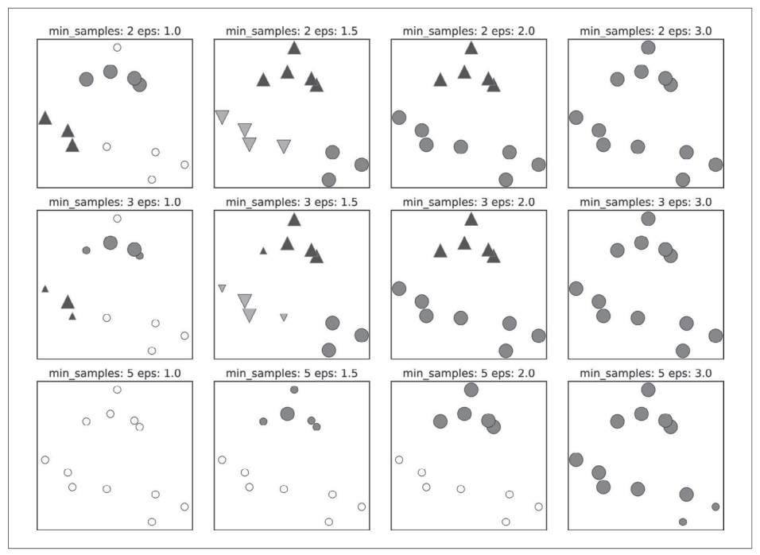
规律总结：
- 增大 eps（图中从左到右）：更多点被包含进一个簇——簇变大，但也可能导致多个簇合并成一个。
- 增大 min_samples（图中从上到下）：核心点变得更少，更多的点被标记为噪声。
参数 eps 相对更重要，因为它决定了点与点之间"接近"的含义：eps 非常小→没有点是核心样本，可能所有点都被标记为噪声；eps 非常大→所有点形成单个簇。min_samples 主要用于判断稀疏区域内的点是被标记为异常值还是形成自己的簇：增大 min_samples 后，任何包含少于 min_samples 个样本的簇都会被标记为噪声——min_samples 决定簇的最小尺寸。图 3-37 的 eps=1.5 一列可以清楚看到：min_samples=3 时有三个簇（分别含 4、5、3 个点）；min_samples=5 时两个较小的簇（3 点和 4 点）变成噪声，只保留 5 个样本的簇。
DBSCAN 虽然不需要显式设置簇的个数，但设置 eps 可以隐式地控制找到的簇的个数。使用 StandardScaler 或 MinMaxScaler 对数据缩放之后，更容易找到 eps 的较好取值——缩放确保所有特征具有相似的范围。
在 two_moons 数据集上运行 DBSCAN（先 StandardScaler 缩放）。默认设置就找到了两个半圆：
# ===== 书 3.5.3 节：two_moons 上的 DBSCAN =====
X, y = make_moons(n_samples=200, noise=0.05, random_state=0)
# 将数据缩放成平均值为0、方差为1
scaler = StandardScaler()
scaler.fit(X)
X_scaled = scaler.transform(X)
dbscan = DBSCAN()
clusters = dbscan.fit_predict(X_scaled)
# 绘制簇分配
plt.scatter(X_scaled[:, 0], X_scaled[:, 1], c=clusters, cmap=mglearn.cm2, s=60)
plt.xlabel("Feature 0")
plt.ylabel("Feature 1")
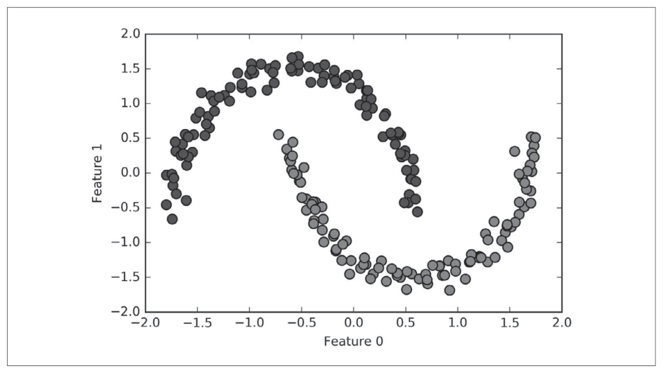
算法找到了我们想要的簇的个数（2 个），参数设置效果很好。如果将 eps 减小到 0.2，会得到 8 个簇——太多了；将 eps 增大到 0.7 则只有一个簇。
小心 -1 标签
使用 DBSCAN 返回的簇分配时要谨慎：如果用簇标签对另一个数据进行索引（如 X[labels == 0]、或把标签当类别 id 传给别的函数），-1 表示噪声这一点可能产生意料之外的结果——-1 在 Python 里是"最后一个"的意思，做切片或 bincount 都会出错（后面用 np.bincount(labels + 1) 就是为了绕开负值）。
3.5.4 聚类算法的对比与评估#
应用聚类算法的一大挑战：很难评估一个算法的效果好坏，也很难比较不同算法的结果。看完三种算法的原理，下面在现实世界的数据集上比较它们。
1. 用真实值评估聚类#
有一些指标可用于评估聚类算法相对真实聚类的结果，最重要的是调整 rand 指数（adjusted rand index, ARI）和归一化互信息（normalized mutual information, NMI）。二者都给出定量度量：最佳值为 1，0 表示不相关的聚类（ARI 可以取负值）。
用 ARI 在 two_moons 数据集上比较三种算法，另外把"随机分配到两个簇"作为对比基准（原书图 3-39）：
# ===== 书 3.5.4 节：ARI 比较三种聚类 =====
from sklearn.metrics.cluster import adjusted_rand_score
X, y = make_moons(n_samples=200, noise=0.05, random_state=0)
# 将数据缩放成平均值为0、方差为1
scaler = StandardScaler()
scaler.fit(X)
X_scaled = scaler.transform(X)
# 列出要使用的算法
algorithms = [KMeans(n_clusters=2), AgglomerativeClustering(n_clusters=2),
DBSCAN()]
# 创建一个随机的簇分配，作为参考
random_state = np.random.RandomState(seed=0)
random_clusters = random_state.randint(low=0, high=2, size=len(X))
print("Random assignment ARI: {:.2f}".format(
adjusted_rand_score(y, random_clusters)))
for algorithm in algorithms:
clusters = algorithm.fit_predict(X_scaled)
print("{} ARI: {:.2f}".format(algorithm.__class__.__name__,
adjusted_rand_score(y, clusters)))
# （原书此处将每种算法的簇分配画成四联小图，对应图 3-39）
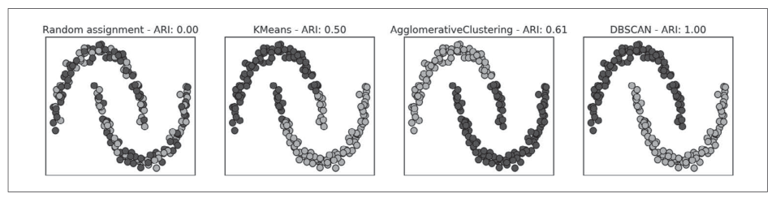
ARI 给出了符合直觉的结果：随机分配 0.00，k 均值 0.50，凝聚聚类 0.61，DBSCAN（完美找到期望的聚类）1.00。
用这种方式评估时，一个常见错误是使用 accuracy_score 而不是 adjusted_rand_score、normalized_mutual_info_score 或其他聚类指标。精度要求分配的簇标签与真实值完全匹配，但簇标签本身毫无意义——唯一重要的是哪些点位于同一个簇中：
# ===== 书 3.5.4 节：accuracy_score 的陷阱 =====
from sklearn.metrics import accuracy_score
# 这两种点标签对应于相同的聚类
clusters1 = [0, 0, 1, 1, 0]
clusters2 = [1, 1, 0, 0, 1]
# 精度为0，因为二者标签完全不同
print("Accuracy: {:.2f}".format(accuracy_score(clusters1, clusters2)))
# 调整rand分数为1，因为二者聚类完全相同
print("ARI: {:.2f}".format(adjusted_rand_score(clusters1, clusters2)))
两个向量只是把 0/1 标签互换，聚类结构一模一样：精度 0，ARI 1。
2. 在没有真实值的情况下评估聚类#
用 ARI 这类指标有个大问题：实践中通常没有真实值来比较。如果我们知道了数据的正确聚类，完全可以用这个信息构建一个监督模型（比如分类器）。因此 ARI/NMI 通常仅有助于开发算法，对评估应用是否成功没有帮助。
有一些评分指标不需要真实值，比如轮廓系数（silhouette coefficient）：计算一个簇的紧致度，值越大越好，最高分数为 1。但它们在实践中效果并不好——紧致的簇很好，但紧致度不允许复杂的形状。用轮廓分数在 two_moons 上比较（silhouette_score(X_scaled, clusters)，原书图 3-40）：k 均值的轮廓分数最高，尽管我们更喜欢 DBSCAN 的结果——半月形不紧致，但它是"对"的聚类。
拓展：ARI 为什么对"随机"校正
ARI 名字里的 adjusted 指它做了机会校正（chance correction）：把两个随机划分"碰巧一致"的部分期望值从分数里扣掉，所以随机划分的期望分数是 0 而不是某个正值；纯 Rand 指数（未校正版）对随机划分会给出一个明显大于 0 的分数，容易高估聚类质量。NMI 同样做了归一化校正。这也是它们优于"标签对齐类"指标（如 accuracy）的根本原因：它们度量划分结构的相似性，不关心具体标签编号。
更好的评估策略是使用基于鲁棒性的（robustness-based）聚类指标：先向数据中添加一些噪声、或使用不同的参数设定，运行算法后比较结果。思想是：如果许多算法参数和许多数据扰动返回相同的结果，那么它很可能是可信的。不幸的是，写作本书时 scikit-learn 还没有实现这一策略。
即使得到鲁棒性很好的聚类或非常高的轮廓分数，仍然不知道聚类是否有语义含义、是否反映数据中你感兴趣的某个方面。回到人脸的例子：希望找到"男人和女人""老人和年轻人""有胡子的人和没胡子的人"这样的分组；假设所有算法对"分成两个簇"给出一致结果，仍不知道找到的簇是否对应感兴趣的概念——算法找到的可能是侧视图和正面视图、夜间和白天拍摄的照片、或者 iPhone 与安卓拍摄的照片。要知道聚类是否对应你感兴趣的内容，唯一的办法就是对簇进行人工分析。
3. 在人脸数据集上比较算法#
把 k 均值、DBSCAN 和凝聚聚类用于 LFW 人脸数据，看能否找到有趣的结构。使用数据的特征脸表示——由含 100 个成分的 PCA(whiten=True) 生成（与原始像素相比语义更强，计算也更快。好练习：在原始数据上跑下面的实验，看能否找到类似的簇）：
# ===== 书 3.5.4 节：人脸数据的特征脸表示 =====
# 从lfw数据中提取特征脸，并对数据进行变换
from sklearn.decomposition import PCA
pca = PCA(n_components=100, whiten=True, random_state=0)
pca.fit_transform(X_people)
X_pca = pca.transform(X_people)
用 DBSCAN 分析人脸数据集。先上默认参数，返回 Unique labels: [-1]——所有数据都被标记为"噪声"。可以改变两个参数改进：增大 eps（扩展每个点的邻域）、减小 min_samples（把更小的点组视为簇）。先试 min_samples=3，仍是 [-1]——即使只考虑 3 个点构成的组，所有点还是噪声。继续增大 eps：
# ===== 书 3.5.4 节：DBSCAN 参数调整 =====
# 应用默认参数的DBSCAN → Unique labels: [-1]
dbscan = DBSCAN()
labels = dbscan.fit_predict(X_pca)
# 减小 min_samples=3 → Unique labels: [-1]（仍然全噪声）
dbscan = DBSCAN(min_samples=3)
labels = dbscan.fit_predict(X_pca)
# 增大 eps=15 → 出现单一簇和噪声点
dbscan = DBSCAN(min_samples=3, eps=15)
labels = dbscan.fit_predict(X_pca)
print("Unique labels: {}".format(np.unique(labels)))
# 计算所有簇中的点数和噪声中的点数。
# bincount不允许负值，所以我们需要加1。
# 结果中的第一个数字对应于噪声点。
print("Number of points per cluster: {}".format(np.bincount(labels + 1)))
eps=15 时得到单一簇 + 噪声点：噪声点只有 27 个、簇内有 2036 个。噪声点这么少，可以全部查看（noise = X_people[labels == -1] 后逐张 imshow）：
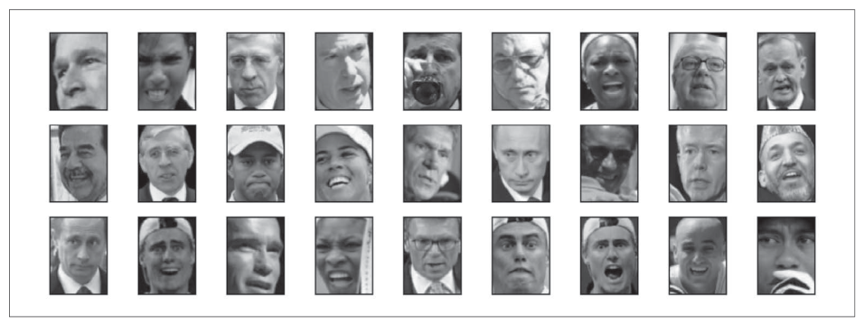
把这些图像与图 3-7 的随机样本比较，能猜出被标为噪声的原因：有人正用玻璃杯喝水，有人戴帽子，最后一张人脸前面有一只手；其他图像包含奇怪的角度，或者太近/太宽的剪切。这种尝试找出"奇怪的那一个"的分析叫异常值检测（outlier detection）。如果这是真实应用，可能会尝试更好地裁切图像以得到更均匀的数据；照片里戴帽子、喝水、举东西的我们无能为力，但要知道它们是数据中存在的问题，应用任何算法都需要面对这些问题。
想找到更有趣的簇而不是一个巨大的簇，需要把 eps 设置在 15 和 0.5（默认值）之间。扫描一圈：
# ===== 书 3.5.4 节：eps 扫描 =====
for eps in [1, 3, 5, 7, 9, 11, 13]:
print("\neps={}".format(eps))
dbscan = DBSCAN(eps=eps, min_samples=3)
labels = dbscan.fit_predict(X_pca)
print("Clusters present: {}".format(np.unique(labels)))
print("Cluster sizes: {}".format(np.bincount(labels + 1)))
eps=1 / 3 / 5（三次输出相同）
Clusters present: [-1]
Cluster sizes: [2063] ← 所有点都被标记为噪声
eps=7
Clusters present: [-1 0 1 2 3 4 5 6 7 8 9 10 11 12]
Cluster sizes: [2006 4 6 6 6 9 3 3 4 3 3 3 3 4]
eps=9
Clusters present: [-1 0 1 2]
Cluster sizes: [1269 788 3 3]
eps=11
Clusters present: [-1 0]
Cluster sizes: [ 430 1633]
eps=13
Clusters present: [-1 0]
Cluster sizes: [ 112 1951]
- 较小的 eps（1、3、5）：所有点都被标记为噪声。
- eps=7：许多噪声点 + 许多较小的簇（13 个小簇，每个 3 到 9 个点）。
- eps=9：仍有很多噪声，但有一个较大簇（788）和一些较小簇。
- eps=11 起：只有一个较大簇 + 噪声。
有意思的规律：较大的簇从来没有超过一个——最多一个包含大多数点的簇，加一些较小的簇。这说明数据中没有两三类非常不同的人脸图像，所有图像或多或少地与其他图像具有相同的相似度（或不相似度）。
eps=7 的结果看起来最有趣（许多较小的簇），把 13 个小簇中的点全部可视化（原书图 3-42：按 for cluster in range(max(labels) + 1) 逐簇画出簇内图像与姓名标签）。观察结论：有一些簇对应于（这个数据集中）脸部非常不同的人，比如 Sharon 或 Koizumi；在每个簇内，人脸方向和面部表情也是固定的；有些簇包含多个人的面孔，但方向和表情相似。
这就是 DBSCAN 在人脸数据上的分析结论。注意：这里进行的是人工分析，不同于监督学习中基于 \(R^2\) 分数或精度的自动化搜索方法。
用 k 均值分析人脸数据集。DBSCAN 无法创建多于一个较大簇；凝聚聚类和 k 均值更可能创建均匀大小的簇，但需要设置簇的目标个数。可以把簇数设为数据集中的已知人数（62），但无监督聚类不太可能完全找到他们。先设一个较小的数量，比如 10：
# ===== 书 3.5.4 节：k 均值聚人脸 =====
# 用k均值提取簇
km = KMeans(n_clusters=10, random_state=0)
labels_km = km.fit_predict(X_pca)
print("Cluster sizes k-means: {}".format(np.bincount(labels_km)))
k 均值把数据划分成大小相似的簇（64 到 386 之间），与 DBSCAN 的结果非常不同。通过可视化簇中心进一步分析。因为在 PCA 表示中聚类，需要用 pca.inverse_transform 把簇中心旋转回原始空间再显示（原书图 3-43，核心代码 ax.imshow(pca.inverse_transform(center).reshape(image_shape), vmin=0, vmax=1)，对 10 个中心循环绘制）：
k 均值找到的簇中心是非常平滑的人脸——不奇怪，每个簇中心都是 64 到 386 张人脸图像的平均；使用降维的 PCA 表示也会增加平滑度（对比图 3-11 中用 100 个 PCA 维度重建的人脸）。聚类似乎捕捉到人脸的不同方向、不同表情（第 3 个簇中心似乎是一张笑脸），以及是否有衬衫领子（倒数第二个簇中心）。
更详细的视图：对每个簇中心给出簇中 5 张最典型的图像（距簇中心最近）与 5 张最不典型的图像（距簇中心最远）：
# ===== 书 3.5.4 节：典型与非典型人脸 =====
mglearn.plots.plot_kmeans_faces(km, pca, X_pca, X_people,
y_people, people.target_names)
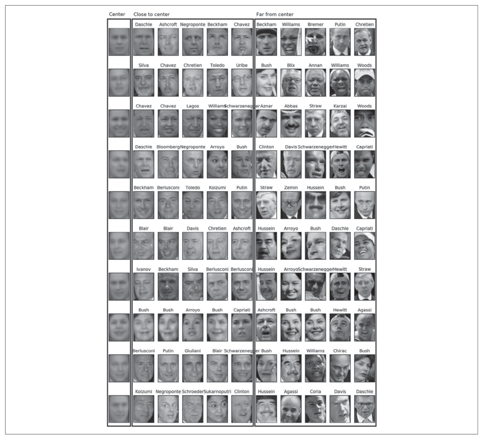
图 3-44 证实了"第 3 个簇是笑脸"的直觉和其他簇中方向的重要性。但"非典型的"点与簇中心不太相似，分配显得随意——原因在于 k 均值对所有数据点进行划分，不像 DBSCAN 那样有"噪声"点的概念。用更多数量的簇可以找到更细微的区别，但簇多了人工检查会更困难。
用凝聚聚类分析人脸数据集：
# ===== 书 3.5.4 节：凝聚聚类聚人脸 =====
# 用ward凝聚聚类提取簇
agglomerative = AgglomerativeClustering(n_clusters=10)
labels_agg = agglomerative.fit_predict(X_pca)
print("Cluster sizes agglomerative clustering: {}".format(
np.bincount(labels_agg)))
# → [255 623 86 102 122 199 265 26 230 155]
# 用 ARI 度量凝聚聚类和 k 均值给出的两种数据划分是否相似
print("ARI: {:.2f}".format(adjusted_rand_score(labels_agg, labels_km)))
凝聚聚类生成的也是大小相近的簇（26 到 623 之间），比 k 均值更不均匀，但比 DBSCAN 更均匀。ARI 只有 0.13，说明两种聚类的共同点很少。不奇怪：对 k 均值来说，远离簇中心的点似乎没有什么共同点。
画树状图看看。限制树的深度，否则分支到 2063 个数据点，图像会密密麻麻无法阅读：
# ===== 书 3.5.4 节：人脸数据的树状图 =====
linkage_array = ward(X_pca)
# 现在我们为包含簇之间距离的linkage_array绘制树状图
plt.figure(figsize=(20, 5))
dendrogram(linkage_array, p=7, truncate_mode='level', no_labels=True)
plt.xlabel("Sample index")
plt.ylabel("Cluster distance") # 原书图 3-45
要创建 10 个簇，需要在顶部有 10 条竖线的位置将树横切。玩具数据的树状图（图 3-36）里，分支长度显示两三个簇就能很好地划分数据；人脸数据没有非常自然的切割点——有一些分支代表更不同的组，但没有一个特别合适的簇数量。这与 DBSCAN 的结论一致（它试图把所有的点都聚在一起）。
把 10 个簇可视化（for cluster in range(10) 逐簇画出簇内图像，左侧标注簇内数量，原书图 3-46）。注意凝聚聚类没有簇中心的概念，只能给出每个簇的前几个点。观察结论：某些簇似乎有语义主题，但许多簇太大而很难均匀。为得到更均匀的簇，改用 40 个簇再跑一次（AgglomerativeClustering(n_clusters=40)），并挑出一些特别有趣的簇（编号 10、13、19、22、36，原书图 3-47，各簇大小见书中输出）。
这里聚类挑选出的似乎是"深色皮肤且微笑""有领子的衬衫""微笑的女性""萨达姆"和"高额头"。进一步详细分析，还可以利用树状图找到这些高度相似的簇。
3.5.5 聚类方法小结#
本节内容表明：聚类的应用与评估是一个非常定性的过程，通常在数据分析的探索阶段很有帮助。三种聚类算法都可以控制聚类的粒度（granularity）：k 均值和凝聚聚类允许指定想要的簇的数量，DBSCAN 允许用 eps 参数定义接近程度从而间接影响簇的大小。三种方法都可以用于大型现实数据集，都相对容易理解，也都可以聚类成多个簇。
每种算法的优点各有不同：
| 算法 | 优势 | 注意点 |
|---|---|---|
| k 均值 | 可以用簇的平均值表示簇；可看作分解方法（每个数据点由其簇中心表示，矢量量化） | 凸形/等直径假设强；需要指定簇数 |
| DBSCAN | 可以检测"噪声点"；帮助自动判断簇的数量；允许复杂形状（two_moons） | 有时会生成大小差别很大的簇——可能是优点也可能是缺点 |
| 凝聚聚类 | 提供数据的可能划分的整个层次结构，可通过树状图轻松查看 | 需要指定簇数；复杂形状仍无能为力 |
3.6 小结与展望#
本章介绍了一系列无监督学习算法，可用于探索性数据分析和预处理。找到数据的正确表示对监督学习和无监督学习的成功都至关重要，预处理和分解方法在数据准备中具有重要作用。
分解、流形学习和聚类都是加深数据理解的重要工具，在没有监督信息的情况下，它们是理解数据的仅有的方法。即使在监督学习中，探索性工具对更好地理解数据性质也很重要。通常很难量化无监督算法的有用性，但这不应该妨碍你使用它们来深入理解数据。学完这些方法，你就已经掌握了机器学习从业者每天使用的所有必要的学习算法。
建议你在 scikit-learn 自带的二维玩具数据和现实世界数据集（digits、iris、cancer）上尝试聚类和分解方法。
侧栏：估计器接口小结 简要回顾第 2 章和第 3 章介绍的 API。scikit-learn 中的所有算法——无论是预处理、监督学习还是无监督学习算法——都被实现为类，这些类叫作估计器（estimator）。应用算法的第一步是把特定类的对象实例化：
# ===== 书 3.6 节 侧栏：估计器接口 =====
from sklearn.linear_model import LogisticRegression
logreg = LogisticRegression()
估计器类包含算法，也保存了利用算法从数据中学到的模型。构建模型对象时应设置模型的所有参数（正则化、复杂度控制、要找到的簇的数量等）。所有估计器都有
fit方法用于构建模型，fit的第一个参数总是数据 X——用 NumPy 数组或 SciPy 稀疏矩阵表示，每一行代表一个数据点；数据 X 总被假定为具有连续值（浮点数）。监督算法还需要一个 y 参数——一维 NumPy 数组，包含回归或分类的目标值（已知的输出标签或响应）。应用学到的模型主要有两种方法：要创建一个新输出（比如 y）的预测，用
predict方法；要创建输入数据 X 的一种新表示，用transform方法。表 3-1 汇总了两者的使用场景：
| 方法 | 适用的任务 |
|---|---|
estimator.fit(X_train, [y_train]) |
所有估计器 |
estimator.predict(X_test) |
分类、回归、聚类 |
estimator.transform(X_test) |
预处理、降维、特征提取、特征选择 |
此外，所有监督模型都有
score(X_test, y_test)方法来评估模型。表中 X_train 和 y_train 指训练数据和训练标签，X_test 和 y_test 指测试数据和测试标签（如果适用）。
坑与陷阱#
本章最容易栽的 8 个地方
- 对测试集单独 fit 缩放器：
test_scaler.fit(X_test)会让测试集用自己的 min/max 缩放，数据相对训练集的排列被随意改变（图 3-2 右图），监督模型评估全废。正确姿势永远是scaler.fit(X_train)+transform两边（见 3.3.3 节）。 - 忘了 KMeans 的 n_clusters 默认是 8：
KMeans()一声不吭给你 8 个簇（原书脚注 3）。簇数是 k 均值的必填概念参数，几乎每次都要显式指定。 - DBSCAN 默认参数在真实数据上全是 -1：默认
eps=0.5、min_samples=5对未缩放/高维数据经常"全部噪声"（人脸数据上连 min_samples=3 都救不回来，要把 eps 推到 15）。先缩放，再扫 eps。 - 把 DBSCAN 的 -1 当正常标签用：标签 -1 表示噪声，拿它做索引、bincount、当类别 id 传给下游都会出意外结果（-1 在 Python 里还是"最后一个元素"）。分析前先把噪声剥离。
- t-SNE 没有 transform：TSNE 只能
fit_transform训练数据本身，不能变换测试集/新数据。把 t-SNE 的输出直接喂给监督模型做训练-测试评估是不可能的——它只用于探索性可视化。 - k 均值对形状的强假设：凸形、等直径、各方向同等重要。拉长的簇、不同密度的簇、two_moons 这类复杂形状都会翻车（图 3-27 到图 3-29）。形状复杂时换 DBSCAN。
- 聚类评估用 accuracy_score：簇标签编号毫无意义，0/1 互换的两个"相同聚类"精度为 0、ARI 为 1。要用 adjusted_rand_score / normalized_mutual_info_score。
- NMF 喂了带负数的数据 & 把分量当有序的：NMF 要求所有特征非负，否则直接报错；且分量没有"第一非负分量"之说，减少分量个数会得到一组完全不同的分量（不像 PCA 是"丢弃后面的成分"），复跑时分量顺序变化也是正常的。
速览#
- 无监督学习没有已知输出，分数据集变换（降维、特征提取）与聚类两类；评估的唯一可靠手段是人工检查，常作为监督算法的预处理。
- 四种缩放：StandardScaler（均值 0 方差 1）、RobustScaler（中位数 + IQR，抗异常值）、MinMaxScaler（0~1）、Normalizer（逐样本向量长度 1，只看方向）。
- 铁律：
fit只在训练集上调用；训练集和测试集用完全相同的变换；变换训练集可用fit_transform。 - 缩放立竿见影：cancer 数据上 SVC(C=100) 精度 0.63 → MinMaxScaler 后 0.97 → StandardScaler 后 0.96。
- PCA：旋转数据使特征不相关 → 主成分按方差（重要性）排序 → 保留前 k 个降维；
components_形状 (n_components, n_features)；whiten=True把成分缩放到同一尺度（1-NN 人脸精度 26.6% → 35.7%）。 - NMF：分量与系数均非负，数据必须非负；分量无顺序、不随分量数递减（减分量=换一组分量）；适合叠加数据（人脸原型、混合信号分离、音频/文本）。
- t-SNE：流形学习，只用于可视化（常二维）；没有 transform 不能处理新数据；保近邻关系，digits 十类全分开；perplexity/early_exaggeration 调节作用一般很小。
- k 均值：分配 → 重算中心交替迭代；
labels_、predict、cluster_centers_、transform（到中心的距离特征）；凸形/等直径假设；n_clusters 默认 8；旧版默认跑 10 次初始化取惯性最小（新版 n_init='auto'）。 - 凝聚聚类：每点自成一簇逐级合并，linkage 三选项 ward（默认，方差增量最小）/average/complete；无 predict，用 fit_predict；层次结构用 SciPy 的
ward(X)+dendrogram画树状图。 - DBSCAN：eps 内至少 min_samples 个邻居 → 核心样本，逐级扩展成簇；能识别噪声（标签 -1）、能聚复杂形状、不用指定簇数；eps 隐式控制簇数，缩放后再调参更容易。聚类指标：有真实值用 ARI/NMI，轮廓系数不看真实值但偏爱紧致簇（two_moons 上会选错 k 均值）。
术语速查#
| 英文 | 中文 | 一句话 |
|---|---|---|
| unsupervised learning | 无监督学习 | 只有输入没有标签，算法自己从数据中提取知识 |
| unsupervised transformation / dimensionality reduction | 无监督变换 / 降维 | 创建数据的新表示；用更少特征概括数据，常为了可视化 |
| clustering / cluster | 聚类 / 簇 | 把数据分成组，簇内相似、簇间不同 |
| StandardScaler | 标准缩放器 | 每个特征均值 0、方差 1，不保证特定最大最小值 |
| RobustScaler | 鲁棒缩放器 | 用中位数和四分位数（IQR）缩放，忽略异常值 |
| MinMaxScaler | 最小最大缩放器 | 把所有特征压到 0 到 1 之间 |
| Normalizer | 归一化器 | 逐样本缩放，使特征向量欧氏长度为 1（只留方向） |
| outlier / outlier detection | 异常值 / 异常值检测 | 与其他点很不一样的点；找出"奇怪的那一个"的分析 |
| estimator | 估计器 | scikit-learn 中所有算法类的统称，都有 fit |
| fit / transform / predict / fit_transform | 拟合 / 变换 / 预测 / 拟合并变换 | 学变换参数 / 应用新表示 / 创建新输出 / 合并写法 |
| principal component analysis / principal component | 主成分分析 / 主成分 | 旋转数据使特征不相关；数据方差的主要方向 |
| components_ | 主成分属性 | PCA/NMF 保存分量的数组，每行一个分量，按重要性排序 |
| explained variance ratio | 解释方差比 | 每个主成分解释的方差占比，用于选成分数（拓展） |
| whitening | 白化 | 把主成分缩放到相同尺度，数据变圆形 |
| eigenface | 特征脸 | 人脸 PCA 的成分向量，长得像模糊人脸 |
| inverse_transform | 逆变换 | 从降维表示转回原始空间，用于重建 |
| non-negative matrix factorization / cancellation effect | 非负矩阵分解 / 抵消效应 | 分量与系数均 ≥ 0 的分解；负分量相加难解释是 PCA 的困扰 |
| manifold learning / t-SNE / perplexity | 流形学习 / t-SNE / 困惑度 | 允许复杂映射的可视化算法族；t-SNE 二维保"哪些点靠近"、无 transform，perplexity 约等于每点考虑的近邻数 |
| k-means / cluster center / MiniBatchKMeans | k 均值 / 簇中心 / 小批量变体 | 簇的均值代表点，分配与重算中心交替迭代；小批量版可扩展到超大数据集 |
| vector quantization / inertia | 矢量量化 / 惯性 | 每点由最近簇中心表示；到中心平方距离之和是 k 均值目标 |
| agglomerative clustering / linkage | 凝聚聚类 / 链接准则 | 每点自成一簇反复合并；度量簇相似度的 ward/average/complete |
| dendrogram | 树状图 | 层次聚类的树形可视化，分支长度=合并距离 |
| DBSCAN / eps / min_samples | DBSCAN 及两参数 | 基于密度的聚类；eps 是"接近"阈值，min_samples 定核心点与最小簇 |
| core sample / boundary point / noise | 核心样本 / 边界点 / 噪声 | eps 内邻居数够的点 / 邻域沾边的非核心点 / 不属于任何簇（标签 -1） |
| adjusted rand index / normalized mutual information / silhouette coefficient / granularity | ARI / NMI / 轮廓系数 / 粒度 | 有真实值的两个聚类指标；轮廓系数无需真实值但偏爱紧致簇；三种算法都可控粒度 |
| ## 覆盖自查 |
原书小节 → 笔记位置对照
| 原书小节 / 内容 | 笔记位置 |
|---|---|
| 3.1 无监督学习的类型（变换 / 聚类、降维、主题提取、照片分组） | 3.1 节 |
| 3.2 无监督学习的挑战（评估难、人工检查、预处理角色） | 3.2 节 |
| 3.3 预处理与缩放（图 3-1 总览） | 3.3 节 + 图 3-1 |
| 3.3.1 不同类型的预处理（四种缩放器、脚注 1 中位数/四分位数） | 3.3.1 节 + 表格 + 拓展公式对照 |
| 3.3.2 应用数据变换（cancer + MinMaxScaler、fit 只用 X、测试集 min/max 非 0/1） | 3.3.2 节 |
| 3.3.3 对训练数据和测试数据进行相同的缩放（图 3-2、单点测试集思想） | 3.3.3 节 + 图 3-2 |
| 3.3.3 侧栏：快捷方式 fit_transform | 3.3.3 节侧栏 + 拓展 |
| 3.3.4 预处理对监督学习的作用（SVC 0.63→0.97→0.96） | 3.3.4 节 |
| 3.4 降维、特征提取与流形学习（三种目的、三个算法） | 3.4 节引言 |
| 3.4.1 主成分分析（图 3-3 四步图解、主成分定义） | 3.4.1 节 + 图 3-3 + 拓展严格定义 |
| 3.4.1-1 PCA 应用于 cancer（图 3-4 直方图、图 3-5 散点、components_、图 3-6 热图） | 3.4.1 节第 1 小节 + 图 3-4/3-5/3-6 |
| 3.4.1-2 特征提取的特征脸（LFW、偏斜处理、1-NN、白化、图 3-9、图 3-10 加权求和、图 3-11 重建、图 3-12） | 3.4.1 节第 2 小节 + 图 3-7 至 3-9/3-11（图 3-10/3-12 文字描述） |
| 3.4.2 非负矩阵分解（约束对比、抵消效应） | 3.4.2 节引言 + 对比表 |
| 3.4.2-1 NMF 应用于模拟数据（图 3-13、随机初始化） | 3.4.2 节第 1 小节 + 图 3-13 |
| 3.4.2-2 NMF 应用于人脸图像（图 3-14、图 3-15、图 3-16/3-17、信号分离图 3-18/3-19、ICA/FA 指引） | 3.4.2 节第 2 小节 + 图 3-15/3-19（其余文字描述） |
| 3.4.3 用 t-SNE 进行流形学习（digits、图 3-20/3-21/3-22、perplexity/early_exaggeration、脚注 2） | 3.4.3 节 + 图 3-21/3-22（图 3-20 文字描述） |
| 3.5.1 k 均值聚类（图 3-23 步骤、图 3-24 边界、labels_/predict/cluster_centers_、脚注 3、图 3-25/3-26） | 3.5.1 节 + 图 3-23/3-24（图 3-25/3-26 文字描述） |
| 3.5.1-1 k 均值的失败案例（图 3-27 密度、图 3-28 拉长、图 3-29 two_moons） | 3.5.1 节第 1 小节 + 图 3-28/3-29（图 3-27 文字描述） |
| 3.5.1-2 矢量量化（图 3-30/3-31、图 3-32、距离特征、MiniBatchKMeans、脚注 4） | 3.5.1 节第 2 小节 + 图 3-31/3-32（图 3-30 文字描述） |
| 3.5.2 凝聚聚类（三 linkage、图 3-33/3-34、脚注 5） | 3.5.2 节 + 图 3-33（图 3-34 文字描述） |
| 3.5.2-1 层次聚类与树状图（图 3-35、SciPy 树状图图 3-36） | 3.5.2 节第 1 小节 + 图 3-36（图 3-35 文字描述） |
| 3.5.3 DBSCAN（原理、核心/边界/噪声、图 3-37、图 3-38、eps=0.2/0.7 讨论） | 3.5.3 节 + 图 3-37/3-38 |
| 3.5.4-1 用真实值评估聚类（ARI/NMI、图 3-39、accuracy 陷阱 In[69]） | 3.5.4 节第 1 小节 + 图 3-39 |
| 3.5.4-2 在没有真实值的情况下评估聚类（轮廓系数、图 3-40、鲁棒性指标、语义含义） | 3.5.4 节第 2 小节（图 3-40 文字描述） |
| 3.5.4-3 在人脸数据集上比较算法（DBSCAN 噪声图 3-41、eps 扫描、图 3-42、k 均值图 3-43/3-44、凝聚聚类图 3-45/3-46/3-47、ARI 0.13） | 3.5.4 节第 3 小节 + 图 3-41/3-44（其余文字描述） |
| 3.5.5 聚类方法小结（粒度、三算法对比） | 3.5.5 节 + 对比表 |
| 3.6 小结与展望 | 3.6 节 |
| 3.6 侧栏：估计器接口小结 + 表 3-1 | 3.6 节侧栏 + 表格 |